44/50 lolos audit dan terpasang. Semua karakter dipilih dari entri dengan informasi lengkap. Ilustrasi adalah interpretasi artistik AI berdasarkan sumber riset.
海出人
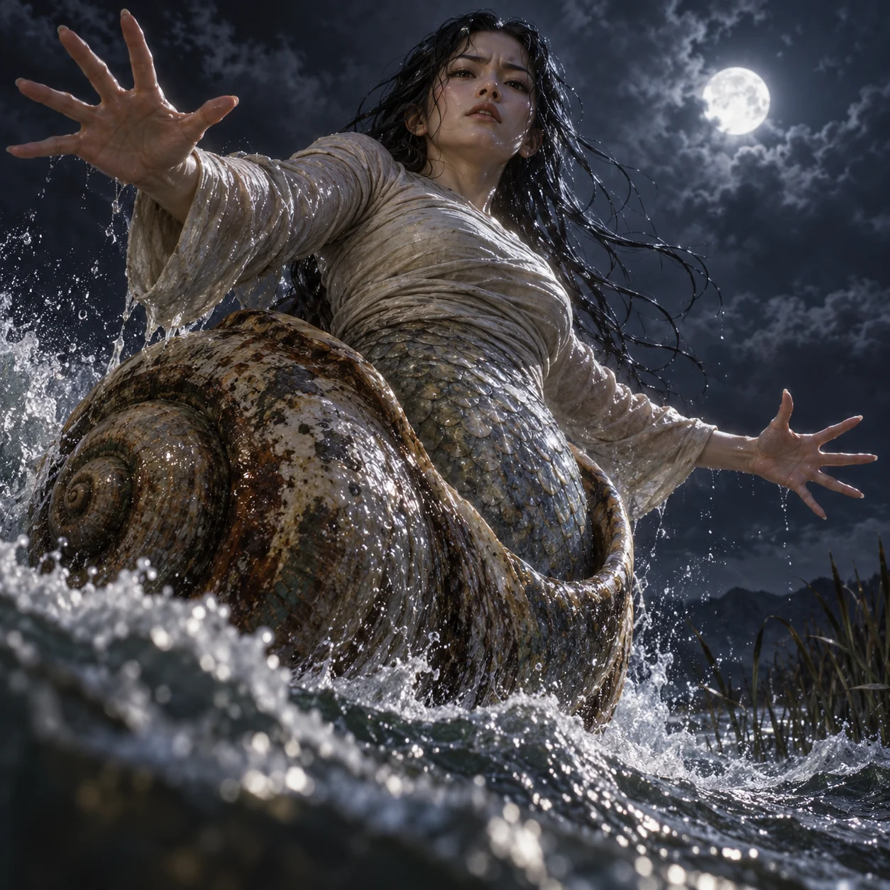
Kaidenin, the shell-riding mermaid prophet of Fukushima Lagoon
Aura: Threat or awe through documented anatomy ['wd-q109603093-c01', 'wd-q109603093-c07'] and action ['wd-q109603093-c02', 'wd-q109603093-c08']; no generic aura.
Audit ciri dan sumber
- [object Object]
- [object Object]
- [object Object]
Native PNG and 200px thumbnail inspected. Subject dominates, active threatening or awe-inspiring moment, claim-mapped anatomy/effects/setting, no text, watermark or generic aura; all seven Sangar checks pass.
Review sumberONE original square premium painterly cinematic Mitoloka illustration of Kaidenin, the shell-riding mermaid prophet of Fukushima Lagoon.
ANATOMY: Exactly one woman-headed yokai with two eyes, two human arms, a scaled fishlike torso and lower half concealed within one large spiral snail shell; opaque plain sea-wet wrapping fully covers chest; no visible human legs, no fish tail outside shell. [wd-q109603093-c01, wd-q109603093-c07]
MOMENT: Surge up toward viewer in the spiral shell riding a wave, both arms open in forceful warning, stare down toward camera.
POWER: Documented luminous appearance of the creature, gentle natural white light confined to wet body surfaces; no halo or magic ribbons. Physical waves carry the shell as a small boat. [wd-q109603093-c02, wd-q109603093-c08]
SCALE & CAMERA: Extreme low angle at lagoon waterline, shell and scaled body fill frame, small reeds set ordinary creature scale.
LIGHT & WEATHER: one dominant cold moonlight source, sharp rim light, deep warm walnut shadows, natural dust or mist.
SURFACE: tactile coarse weathered surfaces, rich painterly texture, no plastic finish.
SETTING: Fukushima Lagoon in Echigo at night. [wd-q109603093-c02]
MOOD: menacing or awe-inspiring, dangerous and imposing, never cute, calm or decorative.
HARD CONSTRAINTS: no text, pseudoinscriptions, lettering, logo, border, frame or watermark; no extra heads, limbs or fingers; no design borrowed from film, game, anime or comic; opaque full clothing for humanoids; no nudity or explicit gore; no generic glow aura, neon outline, energy ribbons or magic symbols.
Valasen
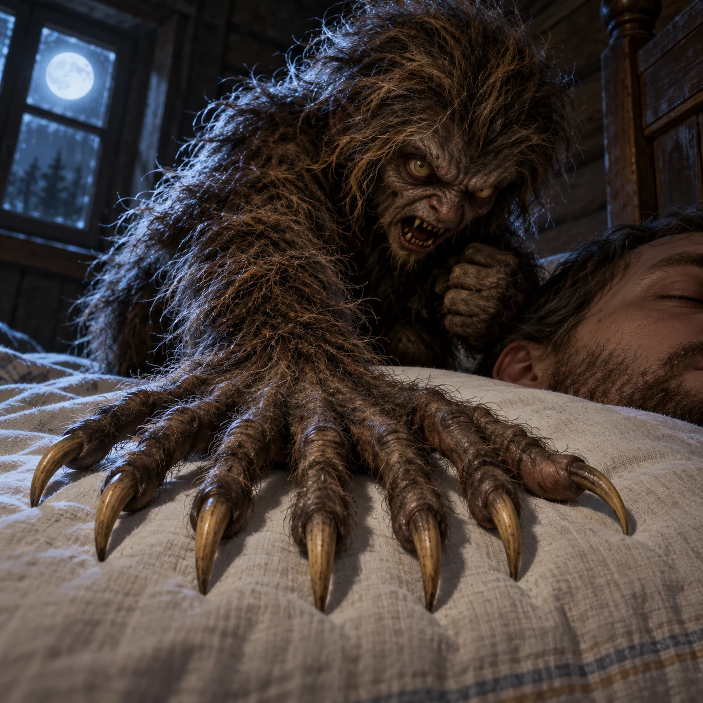
Small shaggy upright house spirit displaying one fully visible seven-fingered clawed hand.
Aura: Unnatural seven-fingered claws c02/c05 and night scratching behavior c06 make a small creature dangerous without enlarging it.
Audit ciri dan sumber
- [object Object]
- [object Object]
- [object Object]
Attempt02 native and 200px inspected: small shaggy creature at sleeper ear threatens with exactly seven separately visible clawed digits on foreground hand (six fingers plus side thumb); other hand closed. Clear nocturnal hissing action, no blood, no giant scale, no aura/text. All seven Sangar checks pass.
Review sumberONE original square premium painterly cinematic Mitoloka illustration of Valasen, a small shaggy Belarusian house spirit with seven-fingered clawed hands.
ANATOMY: one small ugly upright humanoid creature entirely covered in thick long dark fur, one head with two predatory eyes, two arms and two short legs, each hand has EXACTLY SEVEN long distinct claw-tipped fingers (SIX extended fingers plus ONE separate thumb = SEVEN visible digits), no horns, wings or tail [wd-q110202710-c02,wd-q110202710-c05] [wd-q110202710-c02, wd-q110202710-c05, wd-q110202710-c06, wd-q110202710-c04]
MOMENT: Creep toward a sleeper's head and stretch ONE huge seven-fingered clawed hand flat toward the camera, all SEVEN separate digits spread visibly against pale pillow: SIX long fingers plus ONE separate thumb. This is a seven-digit supernatural paw, not a human hand. Make a very wide palm, with six finger knuckles side by side and a seventh thumb on the side. Count all seven distinct claw tips, leave space between each.; other hand curled into a closed fist against its furry chest, hissing mouth close to sleeper's ear; no wound or blood
POWER: Documented night harassment and scratching of sleepers [wd-q110202710-c02,wd-q110202710-c04,wd-q110202710-c06]; no magic glow, no invented smoke
SCALE & CAMERA: extreme low angle; extreme close view at pillow level; small hairy creature and spread seven-fingered palm fill frame; edge of adult sleeping face behind establishes small house-spirit size, no giant body
LIGHT & WEATHER: one dominant moonlight source, strong rim light, deep dark warm shadows, natural spray or dust appropriate to setting
SURFACE: thick tangled dark-brown fur, yellowed long claw nails, rough pale linen pillow, old wooden bedframe
SETTING: a dark Belarusian house at night beside a sleeping person's pillow [wd-q110202710-c04]
MOOD: menacing, dangerous and imposing, never cute, calm or decorative
HARD CONSTRAINTS: no text, pseudoinscriptions, lettering, logo, border, frame or watermark; no extra heads, limbs or fingers; no borrowed film, game, anime or comic design; no nudity or explicit gore; no generic glow aura, neon outline or energy ribbons.
当康
Menunggu gambar yang lolos audit
沓頬
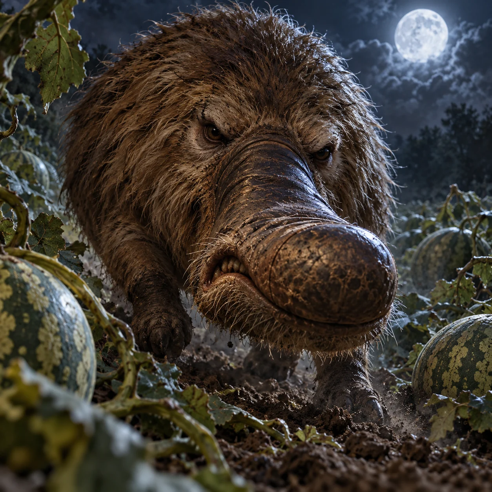
Kutsutsura, selecting the round hairy animal form with bootlike snout
Aura: Threat or awe through documented anatomy ['wd-q11139313-c01', 'wd-q11139313-c06'] and action []; no generic aura.
Audit ciri dan sumber
- [object Object]
- [object Object]
Native PNG and 200px thumbnail inspected. Subject dominates, active threatening or awe-inspiring moment, claim-mapped anatomy/effects/setting, no text, watermark or generic aura; all seven Sangar checks pass.
Review sumberONE original square premium painterly cinematic Mitoloka illustration of Kutsutsura, selecting the round hairy animal form with bootlike snout.
ANATOMY: Exactly one round shaggy hairy quadrupedal beast with one head, two small narrowed deep-set eyes, four short legs and a massive snout shaped unmistakably like an old leather boot toe; organic bootlike snout merges into fur, not a separate shoe hat. No horns, wings or extra mouths. [wd-q11139313-c01, wd-q11139313-c06]
MOMENT: Scramble toward viewer from between melon vines, thrust the long boot-shaped snout into foreground and thrust its boot-snout directly toward camera with lips pulled into a sour aggressive snarl. Keep mouth corners DOWN, no grin.
POWER: No documented magical power; physical scrambling and strange anatomy only. []
SCALE & CAMERA: Extreme ground-level close-up; uncanny boot snout and small scowling eyes dominate frame, no giant scale.
LIGHT & WEATHER: one dominant cold moonlight source, sharp rim light, deep warm walnut shadows, natural dust or mist.
SURFACE: tactile coarse weathered surfaces, rich painterly texture, no plastic finish.
SETTING: A dim melon field, rough soil and leaves. [wd-q11139313-c02, wd-q11139313-c03]
MOOD: unmistakably frightening, grim, threatening, monstrous; NO smile, NO huge cute eyes, NO toy or plush appearance, menacing, dangerous and imposing, never cute, calm or decorative.
HARD CONSTRAINTS: no text, pseudoinscriptions, lettering, logo, border, frame or watermark; no extra heads, limbs or fingers; no design borrowed from film, game, anime or comic; opaque full clothing for humanoids; no nudity or explicit gore; no generic glow aura, neon outline, energy ribbons or magic symbols.
鼷鼠
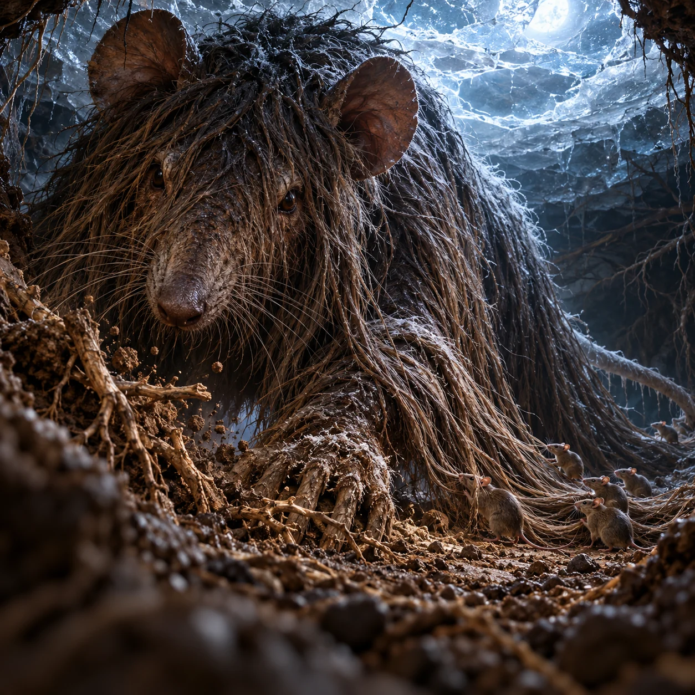
Thousand-jin mouse form with eight-chi shaggy hair, not mammoth/muskox interpretation.
Aura: Extreme mouse mass c07, exceptionally long hair c08 and mice gathering at its tail c10 create uncanny scale without invented magic.
Audit ciri dan sumber
- [object Object]
- [object Object]
- [object Object]
Native and 200px inspected: huge mouse-shaped shaggy animal pushes roots and soil beneath ice, eight-chi hair trails by tiny normal mice gathered to it. Documented abnormal mass/long fur read clearly, no mammoth features or magic, no text, correct one head/four limbs. All seven Sangar checks pass.
Review sumberONE original square premium painterly cinematic Mitoloka illustration of Xishu, the enormous thousand-jin mouse-shaped beast beneath the northern ice with eight-chi hair.
ANATOMY: one huge mouse-shaped animal, one long mouse muzzle, two large round mouse ears, two eyes, four mouse legs, one fine tail, entire body draped in extraordinarily long coarse shaggy hair eight chi long, strands longer than its legs; about a thousand jin in weight, NOT mammoth, no tusks, horns or invented spines [wd-q11180093-c01,wd-q11180093-c07,wd-q11180093-c08] [wd-q11180093-c01, wd-q11180093-c07, wd-q11180093-c08, wd-q11180093-c10, wd-q11180093-c02]
MOMENT: Push forcefully out of a soil tunnel beneath thick ice toward the camera, massive forepaws wrench frozen roots aside, long hair sweeps across ground and tiny ordinary mice gather at fallen tail hairs
POWER: Hair attracts ordinary mice, shown as several tiny mice gathering at strands near the tail [wd-q11180093-c08,wd-q11180093-c10]; no magic aura or beam
SCALE & CAMERA: extreme low angle; extreme low tunnel-floor angle, enormous hairy mouse head and shaggy shoulder fill frame; tiny normal mice beside hair make thousand-jin scale legible, no unsupported city-sized animal
LIGHT & WEATHER: one dominant moonlight source, strong rim light, deep dark warm shadows, natural spray or dust appropriate to setting
SURFACE: rough matted brown-black eight-chi fur, frost-coated roots, packed cold soil and opaque blue-white ice
SETTING: soil under the vast northern ice, roots and plants in subterranean cavity [wd-q11180093-c02,wd-q11180093-c07]
MOOD: menacing, dangerous and imposing, never cute, calm or decorative
HARD CONSTRAINTS: no text, pseudoinscriptions, lettering, logo, border, frame or watermark; no extra heads, limbs or fingers; no borrowed film, game, anime or comic design; no nudity or explicit gore; no generic glow aura, neon outline or energy ribbons.
どうもこうも
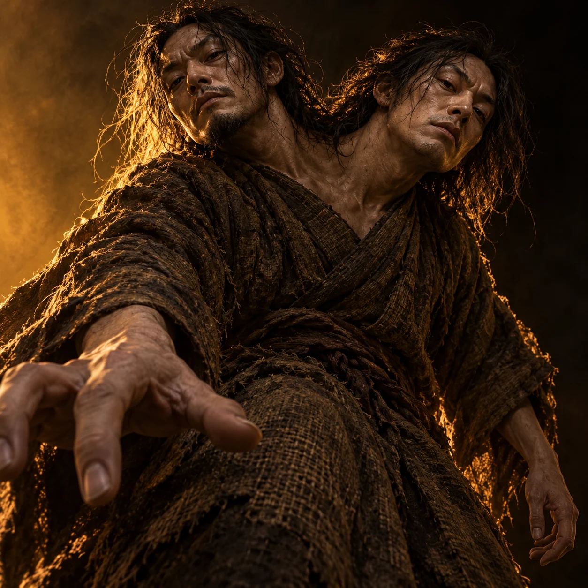
two-headed single human-bodied yokai
Aura: No documented power or behavior; menace through impossible two-headed anatomy, angled motion and low light only
Audit ciri dan sumber
- [object Object]
- [object Object]
Native and200 inspected. Exactly two heads and four eyes fully visible on one clothed human body c02/c06; reaching hand and forward lean provide action. Uncanny double anatomy dominates rather than ordinary human; no powers, text or gore. All seven Sangar yes.
Review sumberONE original square premium painterly cinematic Mitoloka illustration of どうもこうも, two-headed single human-bodied yokai.
ANATOMY: One human body with exactly TWO adult human heads side-by-side, four eyes total, two arms and two legs, fully opaque rough plain robe covering body; both heads equally large and fully visible in foreground [c02, c06]
MOMENT: Lean and step close toward viewer, one hand reaching down into foreground, two fully visible heads turn independently toward the viewer at slightly different angles, neither head hidden by other.
POWER: No documented power or behavior; menace through impossible two-headed anatomy, angled motion and low light only []
SCALE & CAMERA: extreme low angle; close foreshortened framing with subject filling most of the square, no invented giant size unless explicitly stated above.
LIGHT & WEATHER: one low amber side light, sharp rim light, deep shadows; dark walnut and antique gold palette with one strong accent.
SURFACE: weathered human skin, tangled hair, coarse opaque woven robe.
SETTING: Featureless dark ground and shadow, source specifies no habitat [c04]
MOOD: uncanny imposing yokai; dangerous or awe-inspiring and imposing, never cute, calm or decorative.
HARD CONSTRAINTS: no text, writing, lettering, inscriptions, pseudoinscriptions, symbols, logo, border, frame or watermark; no extra heads, limbs or fingers; no design borrowed from any film, game, anime or comic; no nudity or explicit gore; no generic glow aura, neon outline or energy ribbons. Entirely original living creature; no statue or toy.
オボ
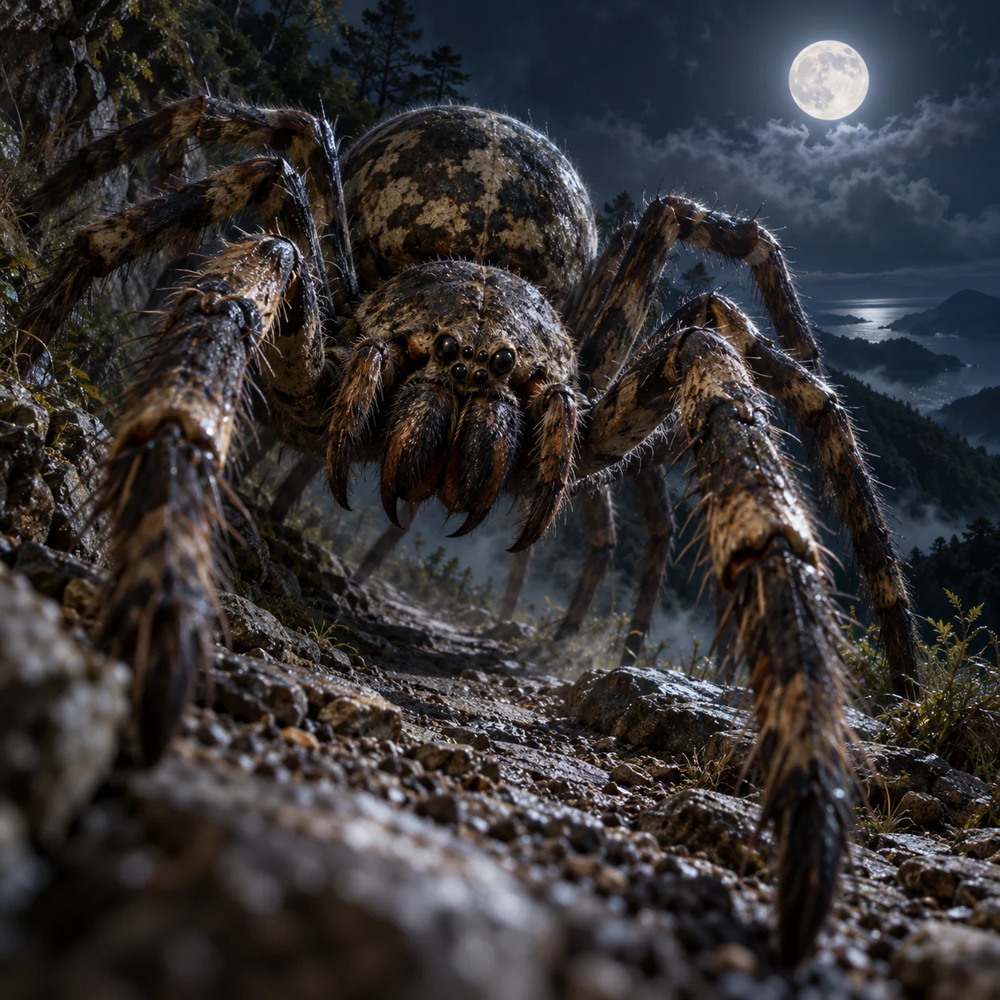
Obo, selecting the Sado Ubu large spider variant
Aura: Threat or awe through documented anatomy ['wd-q11292481-c01', 'wd-q11292481-c06'] and action ['wd-q11292481-c06']; no generic aura.
Audit ciri dan sumber
- [object Object]
- [object Object]
- [object Object]
Native PNG and 200px thumbnail inspected. Subject dominates, active threatening or awe-inspiring moment, claim-mapped anatomy/effects/setting, no text, watermark or generic aura; all seven Sangar checks pass.
Review sumberONE original square premium painterly cinematic Mitoloka illustration of Obo, selecting the Sado Ubu large spider variant.
ANATOMY: Exactly one large spider, one cephalothorax and one abdomen, eight long separated hairy legs, natural spider eyes, no human face or extra appendages. [wd-q11292481-c01, wd-q11292481-c06]
MOMENT: Pursue the viewer along a dark mountain path, front legs reach toward camera while rear legs drive the spider forward.
POWER: No documented magical effect; physical pursuit only. [wd-q11292481-c06]
SCALE & CAMERA: Extreme low angle near ground; large spider fills frame, no invented mountain-sized scale.
LIGHT & WEATHER: one dominant cold moonlight source, sharp rim light, deep warm walnut shadows, natural dust or mist.
SURFACE: tactile coarse weathered surfaces, rich painterly texture, no plastic finish.
SETTING: A night mountain path on Sado, Japan. [wd-q11292481-c01, wd-q11292481-c06]
MOOD: menacing or awe-inspiring, dangerous and imposing, never cute, calm or decorative.
HARD CONSTRAINTS: no text, pseudoinscriptions, lettering, logo, border, frame or watermark; no extra heads, limbs or fingers; no design borrowed from film, game, anime or comic; opaque full clothing for humanoids; no nudity or explicit gore; no generic glow aura, neon outline, energy ribbons or magic symbols.
ガラッパ
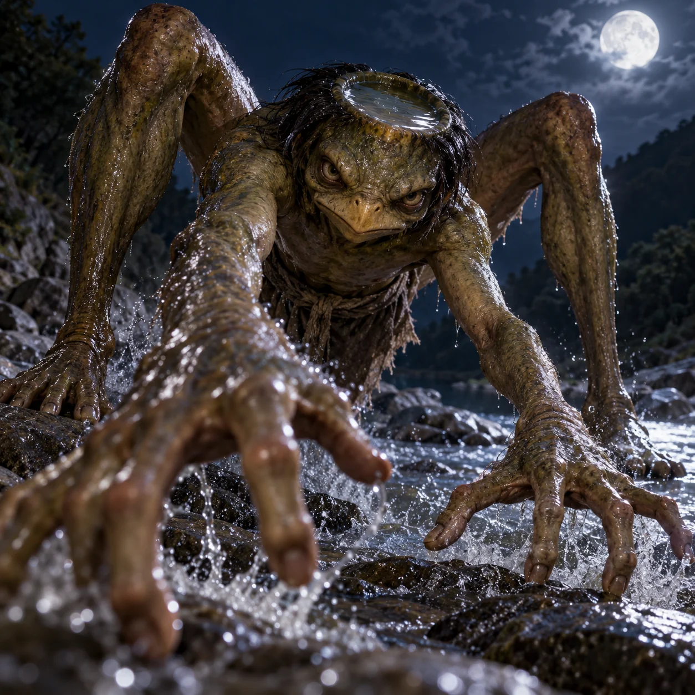
Long-limbed dish-headed Garappa crouching for a sumo challenge; not an ordinary human wrestler.
Aura: Extreme limb proportions c03 and visible head dish c02 give uncanny physical menace during c04 sumo challenge.
Audit ciri dan sumber
- [object Object]
- [object Object]
- [object Object]
Native and 200px inspected: one dish-headed kappa type with exactly two arms/two extremely long legs, crouched knees above head, reaches toward viewer in sumo stance. No giant scale or water-control effect; dish and proportions clear at thumbnail, no text. All seven Sangar checks pass.
Review sumberONE original square premium painterly cinematic Mitoloka illustration of Garappa, the long-limbed kappa yōkai of southern Kyushu rivers.
ANATOMY: one uncanny amphibious humanoid river yōkai, exactly one head with two eyes, a clearly visible shallow water-filled DISH depression on the top of head; exactly two extraordinarily long arms and two extraordinarily long legs, bent knees rise ABOVE ITS HEAD when crouching; rough wet dark olive skin, plain opaque ragged waistcloth, no invented horns, wings, tail, weapons or extra limbs [wd-q11296232-c01,wd-q11296232-c02,wd-q11296232-c03] [wd-q11296232-c01, wd-q11296232-c02, wd-q11296232-c03, wd-q11296232-c04]
MOMENT: Drive forward from an impossibly long-legged low sumo crouch at river edge, both knees visibly high above head on either side, long hands reaching out to grapple the viewer, head tilted so its water dish is unmistakable
POWER: Documented eagerness to challenge humans to sumo [wd-q11296232-c04]; physical splashing only, no supernatural water control
SCALE & CAMERA: extreme low angle; extreme low close view; dish-headed face and bent high knees dominate square with complete readable limbs, no giant scale
LIGHT & WEATHER: one dominant moonlight source, strong rim light, deep dark warm shadows, natural spray or dust appropriate to setting
SURFACE: rough wet river-worn skin, glistening dish water, mossy rocks and coarse waistcloth
SETTING: Sendai River in Kagoshima, southern Kyushu, unpopulated rocky bank [wd-q11296232-c01,wd-q11296232-c02]
MOOD: menacing, dangerous and imposing, never cute, calm or decorative
HARD CONSTRAINTS: no text, pseudoinscriptions, lettering, logo, border, frame or watermark; no extra heads, limbs or fingers; no borrowed film, game, anime or comic design; no nudity or explicit gore; no generic glow aura, neon outline or energy ribbons.
和尚魚
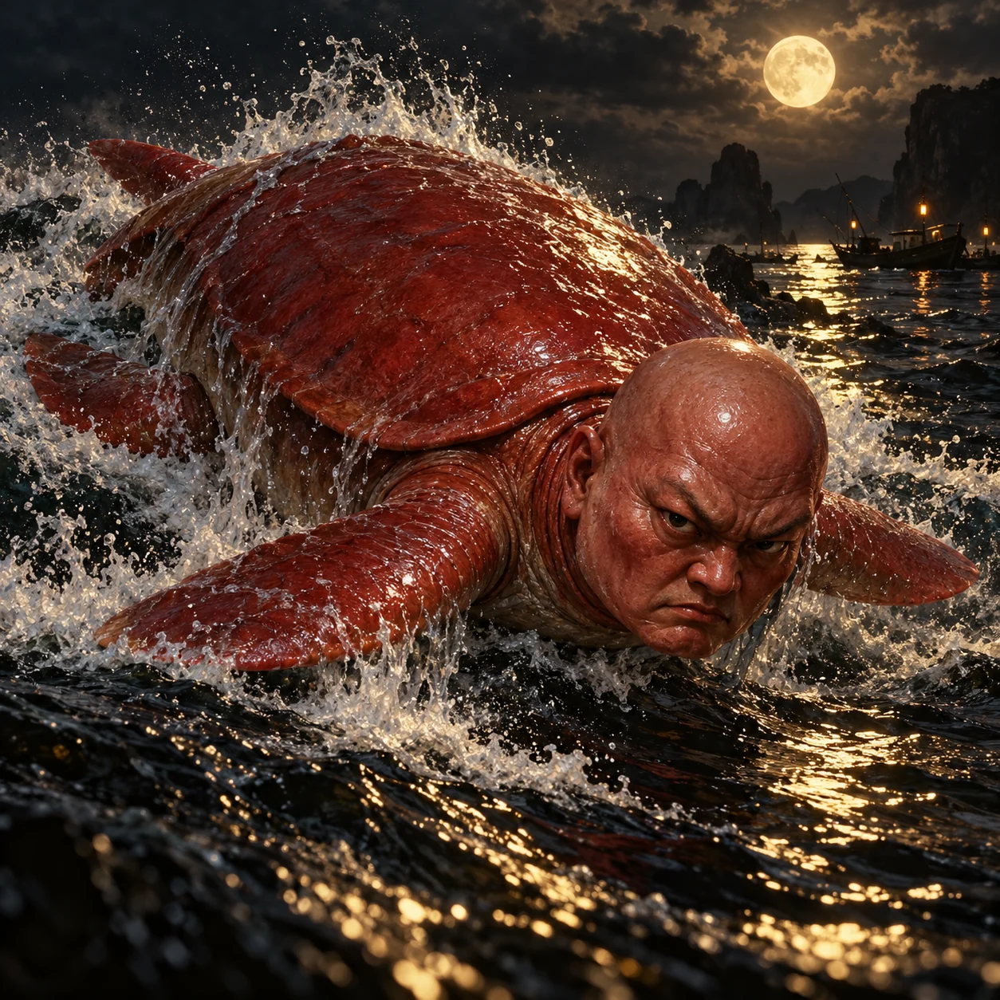
red turtle-bodied monk-headed Oshouo
Aura: Breach sea surface, massive displaced water pours off turtle back; no literal magical effect or invented fire wd-q11417222-c03
Audit ciri dan sumber
- [object Object]
- [object Object]
- [object Object]
Native and200 inspected. Red oval softshell turtle shell and paddle body clearly readable with bald human head c02/c05, correcting prior frontal ambiguity. Surging splash physical only; no ordinary human silhouette, aura, text or extra heads. All seven Sangar yes.
Review sumberONE original square premium painterly cinematic Mitoloka illustration of 和尚魚, red turtle-bodied monk-headed Oshouo.
ANATOMY: One red softshell-turtle body with a bald human monk-like head, one head two eyes four flipperlike turtle limbs and one short tail, no shell decoration or clothing needed on turtle body [c01, c02, c05]
MOMENT: Surge sideways diagonally toward viewer in full-body three-quarter view: broad RED OVAL TURTLE SHELL occupying half of image, low flattened turtle torso, four short horizontal paddle limbs clearly visible and NO HUMAN ARMS OR SHOULDERS, bald human monk head at front of shell, angry eyes toward viewer. Whole shell contour and four paddles visible above low water, no robe or cloth.
POWER: Breach sea surface, massive displaced water pours off turtle back; no literal magical effect or invented fire [c03]
SCALE & CAMERA: low three-quarter camera just above sea level; close foreshortened framing with subject filling most of the square, no invented giant size unless explicitly stated above.
LIGHT & WEATHER: one low moon reflected across water, sharp rim light, deep shadows; dark walnut and antique gold palette with one strong accent.
SURFACE: wet red leathery turtle skin, smooth bald head, black seawater.
SETTING: Dark coastal sea associated with fishing [c01, c03]
MOOD: uncanny imposing sea yokai; dangerous or awe-inspiring and imposing, never cute, calm or decorative.
HARD CONSTRAINTS: no text, writing, lettering, inscriptions, pseudoinscriptions, symbols, logo, border, frame or watermark; no extra heads, limbs or fingers; no design borrowed from any film, game, anime or comic; no nudity or explicit gore; no generic glow aura, neon outline or energy ribbons. Entirely original living creature; no statue or toy.
尻こぼし
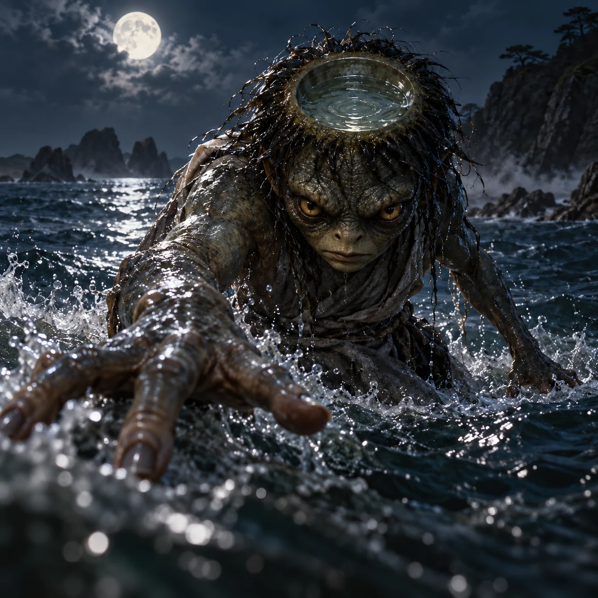
Shirikoboshi, the sea kappa-type yokai with a dish on its head
Aura: Threat or awe through documented anatomy ['wd-q11464873-c01', 'wd-q11464873-c06', 'wd-q11464873-c07'] and action ['wd-q11464873-c03', 'wd-q11464873-c05']; no generic aura.
Audit ciri dan sumber
- [object Object]
- [object Object]
- [object Object]
Native PNG and 200px thumbnail inspected. Subject dominates, active threatening or awe-inspiring moment, claim-mapped anatomy/effects/setting, no text, watermark or generic aura; all seven Sangar checks pass.
Review sumberEDIT ONLY the pointed bird beak in this Shirikoboshi illustration. Replace it with a small closed ordinary humanoid mouth and flattened nose integrated into the same rough wet greenish face. No beak, no fangs, no tusks. Preserve everything else exactly: two eyes, water-filled shallow dish on top of head, two arms, reaching five-finger hand, wet opaque clothing, sea surface and Mie coast, confrontational framing and night lighting. Basis: wd-q11464873-c01 kappa-type sea yokai, c06/c07 head dish, c03/c05 physical attack, no soul orb. No added anatomy, no text or watermark.
常元虫
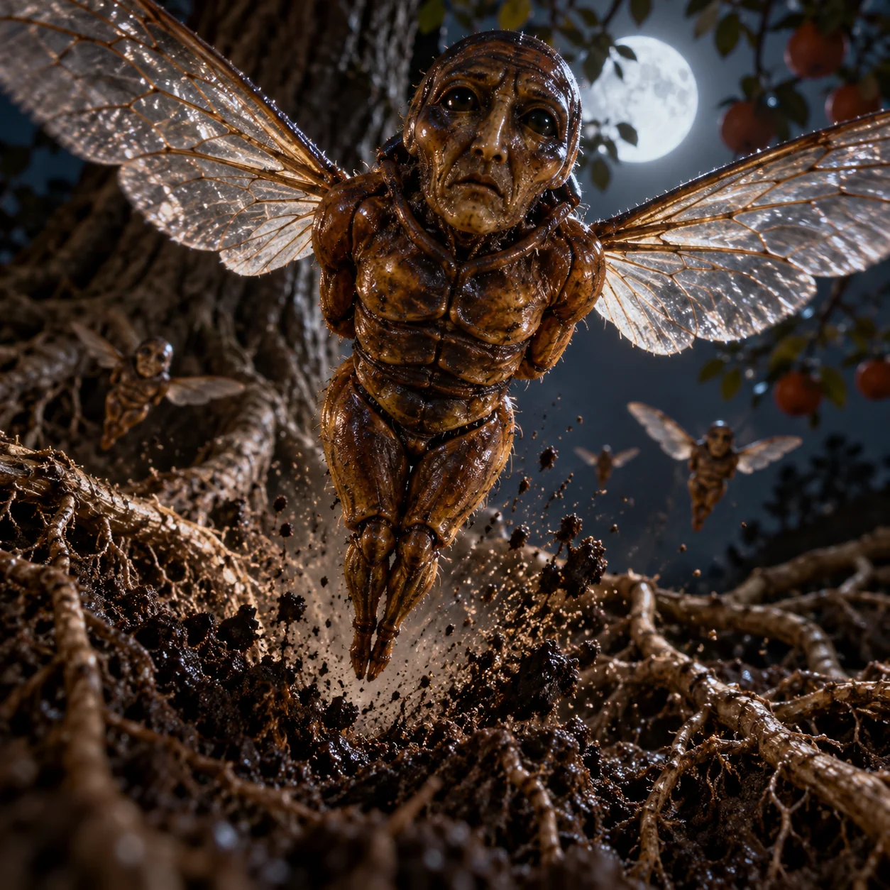
Flying bound-human-shaped insect with human-face form from emergence accounts; excludes box-holding Otsu alternative.
Aura: Bound-human insect form and emergence/flight c03 plus human-face shape c05 create uncanny menace at insect scale.
Audit ciri dan sumber
- [object Object]
- [object Object]
- [object Object]
Native and 200px inspected: flying chitin insect has bound-human shape, human-face-shaped head, folded upper appendages and paired lower appendages; emerges forcefully from root soil. No literal corpse, rope or gore, no text or aura. Uncanny form and active emergence dominate at macro scale; all seven Sangar checks pass.
Review sumberONE original square premium painterly cinematic Mitoloka illustration of Jōgenmushi, the uncanny insect resembling a bound human, emerging from a buried monk's tree.
ANATOMY: one tiny winged insect with a whole chitinous body shaped like a human with hands bound behind its back: one human-face-shaped head with two eyes, paired upper appendages folded tightly behind torso, paired lower appendages held together, two translucent flying wings; constricted jointed brown chitin naturally resembles bindings, no literal rope, no clothes, no actual human skin, no horns or invented weapons [wd-q11481315-c03,wd-q11481315-c05] [wd-q11481315-c03, wd-q11481315-c05, wd-q11481315-c02]
MOMENT: Emerge upward from black soil among persimmon roots and fly straight at camera, rigid bound-human body dangling beneath beating wings, strange human-shaped face staring directly at viewer
POWER: Documented insect emergence and flight regarded as dead monk's soul [wd-q11481315-c03]; no magical aura or curse rays
SCALE & CAMERA: extreme low angle; extreme macro from below, single insect fills nearly all square, nearby coarse root fibers and dirt grains demonstrate tiny real insect size, a few smaller insects of same shape distant behind
LIGHT & WEATHER: one dominant moonlight source, strong rim light, deep dark warm shadows, natural spray or dust appropriate to setting
SURFACE: ridged dark amber chitin, vein-lined transparent wings, wet soil, rough persimmon roots
SETTING: soil at the base of the persimmon tree above the burial site [wd-q11481315-c02,wd-q11481315-c05]
MOOD: menacing, dangerous and imposing, never cute, calm or decorative
HARD CONSTRAINTS: no text, pseudoinscriptions, lettering, logo, border, frame or watermark; no extra heads, limbs or fingers; no borrowed film, game, anime or comic design; no nudity or explicit gore; no generic glow aura, neon outline or energy ribbons.
手洗鬼
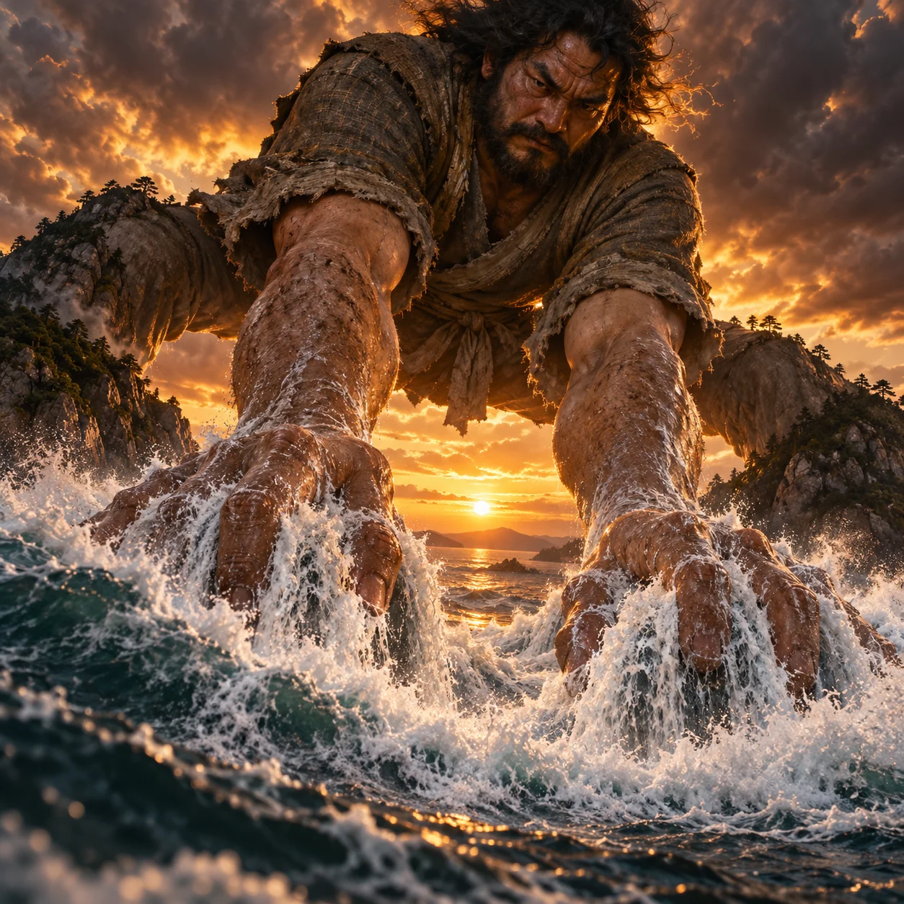
mountain-straddling Tearai giant washing hands
Aura: Wash huge hands in sea, hands physically push bay water into great waves that spill between fingers wd-q11497077-c02,wd-q11497077-c06
Audit ciri dan sumber
- [object Object]
- [object Object]
- [object Object]
Native and200 inspected: giant straddles mountains and plunges hands into bay c02/c06. Two arms two legs, fully clothed, no oni horns c07. Physical sea foam streams off hands, tiny mountain trees give scale. No text or aura. All seven Sangar yes.
Review sumberONE original square premium painterly cinematic Mitoloka illustration of 手洗鬼, mountain-straddling Tearai giant washing hands.
ANATOMY: One immense humanlike giant, one head two eyes two arms two legs, fully opaque plain rough tunic and trousers, no horns tusks or weapons [c01, c02, c07]
MOMENT: Bend down toward viewer while straddling two mountains, both enormous hands plunge into foreground bay, water cascades between raised fingers; stern giant face fills upper center.
POWER: Wash huge hands in sea, hands physically push bay water into great waves that spill between fingers [c02, c06]
SCALE & CAMERA: extreme low angle; close foreshortened framing with subject filling most of the square, no invented giant size unless explicitly stated above.
LIGHT & WEATHER: single low amber sunset below cloud bank, sharp rim light, deep shadows; dark walnut and antique gold palette with one strong accent.
SURFACE: rough weathered skin, soaked coarse opaque cloth, jagged stone, white sea foam.
SETTING: Straddle mountains between Takamatsu and Marugame above the bay, tiny trees on mountain ridges establish immense scale [c03, c06]
MOOD: awe-inspiring mountain-straddling giant; dangerous or awe-inspiring and imposing, never cute, calm or decorative.
HARD CONSTRAINTS: no text, writing, lettering, inscriptions, pseudoinscriptions, symbols, logo, border, frame or watermark; no extra heads, limbs or fingers; no design borrowed from any film, game, anime or comic; no nudity or explicit gore; no generic glow aura, neon outline or energy ribbons. Entirely original living creature; no statue or toy.
海月の火の玉
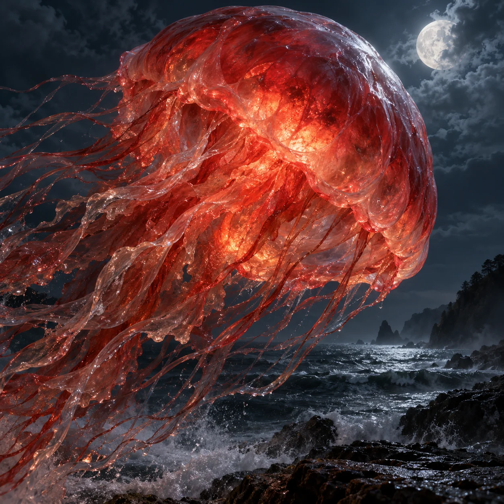
Kurage no Hinotama, the jellyfish ghost fire flying over the seashore
Aura: Threat or awe through documented anatomy ['wd-q11558956-c01', 'wd-q11558956-c03', 'wd-q11558956-c04'] and action ['wd-q11558956-c02', 'wd-q11558956-c06']; no generic aura.
Audit ciri dan sumber
- [object Object]
- [object Object]
- [object Object]
Native PNG and 200px thumbnail inspected. Subject dominates, active threatening or awe-inspiring moment, claim-mapped anatomy/effects/setting, no text, watermark or generic aura; all seven Sangar checks pass.
Review sumberONE original square premium painterly cinematic Mitoloka illustration of Kurage no Hinotama, the jellyfish ghost fire flying over the seashore.
ANATOMY: Exactly one floating jellyfishlike fireball with a translucent red gelatinous dome and trailing sticky translucent strands, no face, eyes, limbs or invented humanoid features. [wd-q11558956-c01, wd-q11558956-c03, wd-q11558956-c04]
MOMENT: Sweep toward the viewer on a sea gust, fireball tilting and translucent red jelly trailing in wind.
POWER: A ghost fire flies at the shore, light produced by the documented fireball itself, not an aura around another creature. [wd-q11558956-c02, wd-q11558956-c06]
SCALE & CAMERA: Extreme close view, jellyfish ghost fire occupies80percent frame against distant dark shore; no giant claim.
LIGHT & WEATHER: one dominant cold moonlight source, sharp rim light, deep warm walnut shadows, natural dust or mist.
SURFACE: tactile coarse weathered surfaces, rich painterly texture, no plastic finish.
SETTING: Ishikawa seashore at night, dark ocean waves. [wd-q11558956-c05, wd-q11558956-c06]
MOOD: menacing or awe-inspiring, dangerous and imposing, never cute, calm or decorative.
HARD CONSTRAINTS: no text, pseudoinscriptions, lettering, logo, border, frame or watermark; no extra heads, limbs or fingers; no design borrowed from film, game, anime or comic; opaque full clothing for humanoids; no nudity or explicit gore; no generic glow aura, neon outline, energy ribbons or magic symbols.
牛打ち坊
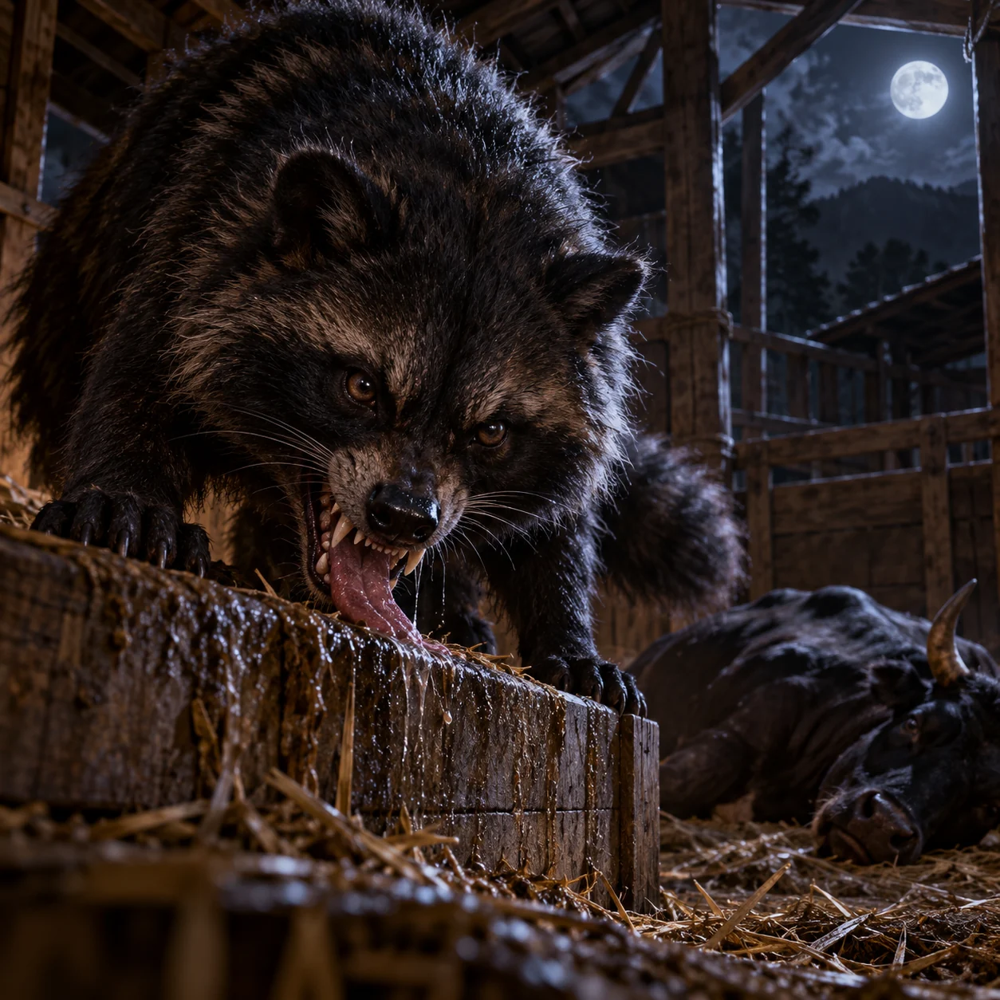
Black tanuki-like beast licking fodder box while livestock collapses, no invented supernatural anatomy.
Aura: Fodder-box lick and fatal livestock consequence c05 create uncanny danger in black tanuki form c02, without visible aura.
Audit ciri dan sumber
- [object Object]
- [object Object]
- [object Object]
Native and 200px inspected: vicious black tanuki-like yokai licks fodder trough while cattle collapses behind, documented lethal deed is clear. One head/four animal limbs with rear legs naturally hidden, normal scale against cattle, no invented magic/anatomy/text/gore. All seven Sangar checks pass on threatening documented deed, rather than ordinary animal rest.
Review sumberONE original square premium painterly cinematic Mitoloka illustration of Ushiuchibō, the black tanuki-like livestock-killing yōkai of Tokushima.
ANATOMY: one sinister black tanuki-like beast, one broad raccoon-dog head with two eyes, four stout clawed legs and one bushy tail, coarse near-black matted fur, natural animal anatomy with no horns, wings, extra limbs or invented monster features [wd-q11570142-c02] [wd-q11570142-c02, wd-q11570142-c05, wd-q11570142-c01]
MOMENT: Crouch aggressively atop a cattle fodder box inside a dark shed, tongue dragging along the wooden rim while its jaws peel back in a vicious snarl toward camera, one cattle silhouette collapsing into straw behind without visible injury
POWER: Its licking a fodder box causes the livestock to die [wd-q11570142-c05]; show contaminated lick and collapsing animal physically, no poison light, no colored vapor, no magical aura
SCALE & CAMERA: extreme low angle; extreme close low angle beside fodder trough, beast head and shoulders fill most square, cattle behind provides natural tanuki scale, no giant animal
LIGHT & WEATHER: one dominant moonlight source, strong rim light, deep dark warm shadows, natural spray or dust appropriate to setting
SURFACE: matted pitch-black fur, saliva on rotten wooden rim, dirty straw, damp timber and rough cattle hide
SETTING: a livestock shed at night in northern Tokushima [wd-q11570142-c01,wd-q11570142-c02]
MOOD: menacing, dangerous and imposing, never cute, calm or decorative
HARD CONSTRAINTS: no text, pseudoinscriptions, lettering, logo, border, frame or watermark; no extra heads, limbs or fingers; no borrowed film, game, anime or comic design; no nudity or explicit gore; no generic glow aura, neon outline or energy ribbons.
磯天狗
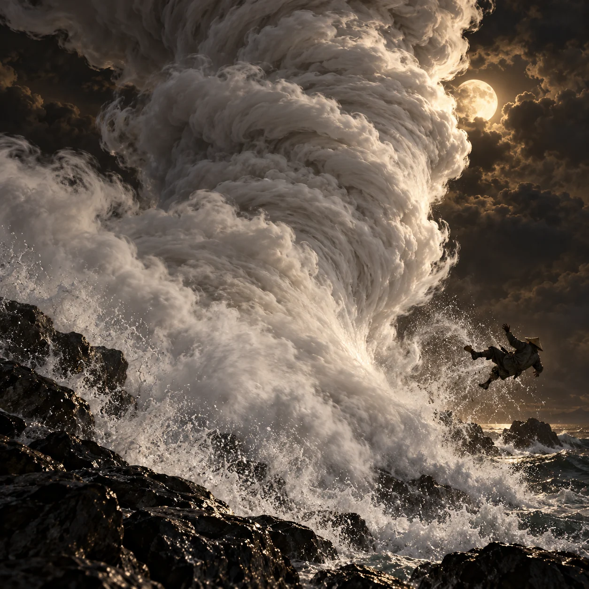
documented rotating white-smoke manifestation of Isotengu
Aura: Rotating white smoke flings a single tiny fully clothed fisher silhouette off rocky shore toward sea, airborne body and spray show physical force, no blood or injury wd-q11587955-c04
Audit ciri dan sumber
- [object Object]
- [object Object]
- [object Object]
Native and200 inspected. Dominant rotating white smoke c04 actively hurls tiny fisher over rocky shore/sea. No invented body; active manifestation selected per6.5, smoke is creature rather than empty landscape. No gore, aura, face or text. All seven Sangar yes.
Review sumberONE original square premium painterly cinematic Mitoloka illustration of 磯天狗, documented rotating white-smoke manifestation of Isotengu.
ANATOMY: No invented humanoid anatomy: Isotengu manifests as one massive rotating column of WHITE SMOKE, dense corkscrewing form fills frame from shore to overhead; no face eyes or limbs [c04]
MOMENT: Twist violently toward viewer over shore rocks, thick white smoke sweeps the whole foreground and hurls a tiny fisher over water. The rotating smoke itself is the creature, not background weather.
POWER: Rotating white smoke flings a single tiny fully clothed fisher silhouette off rocky shore toward sea, airborne body and spray show physical force, no blood or injury [c04]
SCALE & CAMERA: extreme low angle; close foreshortened framing with subject filling most of the square, no invented giant size unless explicitly stated above.
LIGHT & WEATHER: one low moon behind coastal cloud, sharp rim light, deep shadows; dark walnut and antique gold palette with one strong accent.
SURFACE: turbulent opaque white smoke, wet black rock, sea spray.
SETTING: Rocky Japanese shoreline, dark sea below [c01, c06]
MOOD: menacing violent sea manifestation; dangerous or awe-inspiring and imposing, never cute, calm or decorative.
HARD CONSTRAINTS: no text, writing, lettering, inscriptions, pseudoinscriptions, symbols, logo, border, frame or watermark; no extra heads, limbs or fingers; no design borrowed from any film, game, anime or comic; no nudity or explicit gore; no generic glow aura, neon outline or energy ribbons. Entirely original living creature; no statue or toy.
空狐
Menunggu gambar yang lolos audit
狕
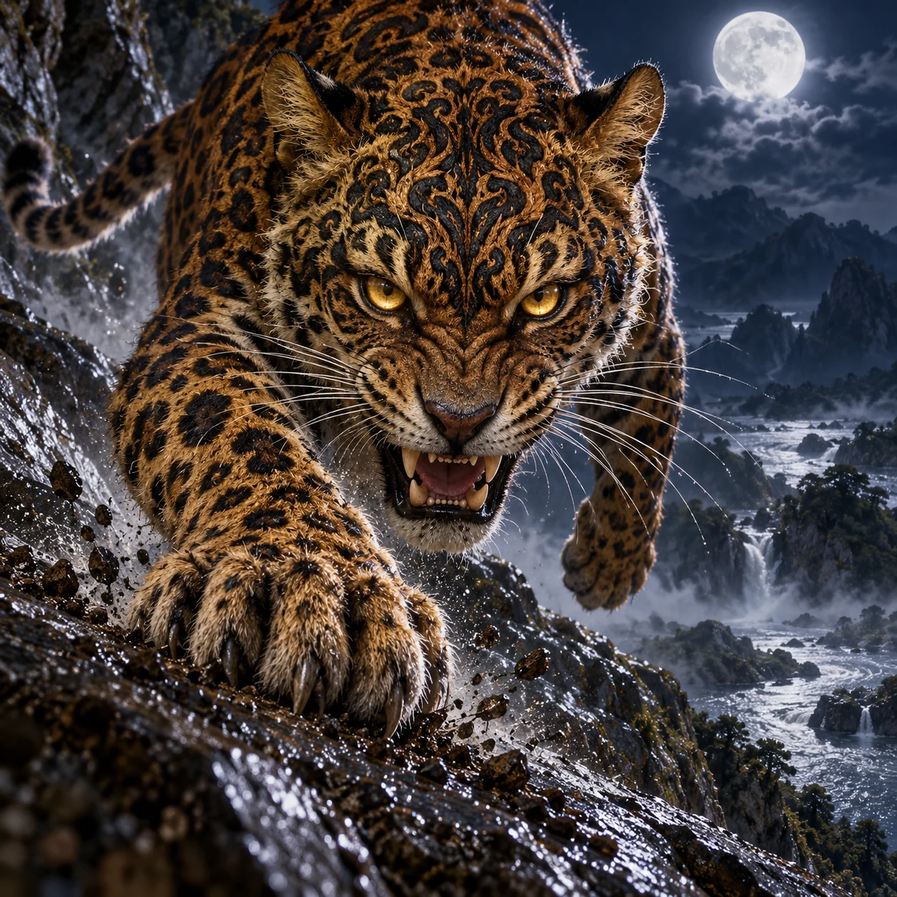
Leopard-like Yao with elaborately patterned head, no invented horns or powers.
Aura: Elaborate patterned leopard-head c01/c07, close predatory movement and mountain light create danger without added power.
Audit ciri dan sumber
- [object Object]
- [object Object]
Native and 200px inspected: leopard-like animal lunges with striking dense elaborate swirling natural fur pattern on head, no horns or invented power. Pattern is pigmentation with no lettering/sigils. Single head and normal feline limbs/tail, no giant scale, mountain water backdrop. All seven Sangar checks pass; source-defined head pattern is distinguishing trait.
Review sumberONE original square premium painterly cinematic Mitoloka illustration of Yao, the leopard-like legendary animal of Mount Di with an elaborately patterned head.
ANATOMY: one leopard-like beast, one head, two eyes, four feline legs, one long tail; extraordinary elaborately patterned head covered in intricate dense branching russet-black and antique-gold fur markings, clearly more elaborate than ordinary leopard rosettes, but natural pigmentation only, NO letters or glyphs; no horns, wings, extra eyes, giant size or other invented anatomy [wd-q15897734-c01,wd-q15897734-c07] [wd-q15897734-c01, wd-q15897734-c07, wd-q15897734-c02, wd-q15897734-c04]
MOMENT: Spring over a slick rock ledge directly toward camera, snarling muzzle and elaborately patterned forehead close to viewer, near forepaw slams grit loose from wet stone
POWER: No documented power; menace through leopard anatomy, confronting leap, detailed head pattern and natural light only
SCALE & CAMERA: extreme low angle; extreme low tight close view, entire patterned head and a foreshortened paw dominate square; ordinary leopard size, no giant scale
LIGHT & WEATHER: one dominant moonlight source, strong rim light, deep dark warm shadows, natural spray or dust appropriate to setting
SURFACE: coarse damp patterned fur, rain-beaded whiskers, rough wet cliff stone
SETTING: Mount Di beside the Di water flowing toward Tai marsh [wd-q15897734-c02,wd-q15897734-c04]
MOOD: menacing, dangerous and imposing, never cute, calm or decorative
HARD CONSTRAINTS: no text, pseudoinscriptions, lettering, logo, border, frame or watermark; no extra heads, limbs or fingers; no borrowed film, game, anime or comic design; no nudity or explicit gore; no generic glow aura, neon outline or energy ribbons.
红柳娃
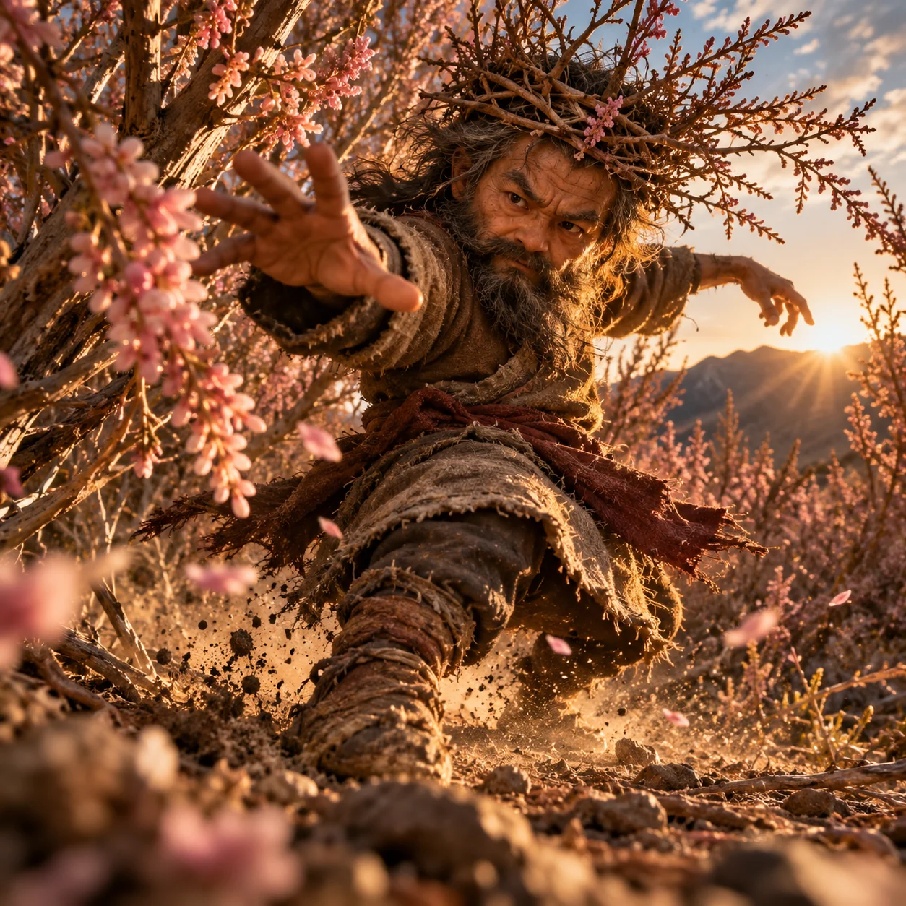
tiny bearded hongliuwa wearing tamarisk twig crown
Aura: No magic: dance rapidly among hongliu blossoms, dust and petals stirred by steps only wd-q15923632-c03
Audit ciri dan sumber
- [object Object]
- [object Object]
- [object Object]
Native and200 inspected: tiny adult bearded person c02/c07 with hongliu twig crown c03 dances/whirls amid large relative blossoms; fully opaque tunic, no nudity. Dynamic low macro framing, no supernatural effects or text. All seven Sangar yes.
Review sumberONE original square premium painterly cinematic Mitoloka illustration of 红柳娃, tiny bearded hongliuwa wearing tamarisk twig crown.
ANATOMY: One very small adult humanoid a little over one chi tall, ordinary human beard eyebrows and hair, one head two eyes two arms two legs; crown made solely from hongliu tamarisk twigs; fully opaque plain rough tunic covering shoulders to knees [c02, c03, c07]
MOMENT: Whirl into foreground mid-dance, twig crown tilted and one hand extended toward viewer, beard and small severe eyes sharp. Macro camera at ground level, nearby blossom as large as his hand.
POWER: No magic: dance rapidly among hongliu blossoms, dust and petals stirred by steps only [c03]
SCALE & CAMERA: extreme low angle; close foreshortened framing with subject filling most of the square, no invented giant size unless explicitly stated above.
LIGHT & WEATHER: one low warm sun slanting between scrub stems, sharp rim light, deep shadows; dark walnut and antique gold palette with one strong accent.
SURFACE: weathered skin, coarse beard, rough opaque cloth, brittle tamarisk twigs.
SETTING: Hongliu tamarisk scrub on mountains near Urumqi, giant-looking natural twigs reveal small actual scale [c02, c03]
MOOD: uncanny awe-inspiring miniature person, not a cute child; dangerous or awe-inspiring and imposing, never cute, calm or decorative.
HARD CONSTRAINTS: no text, writing, lettering, inscriptions, pseudoinscriptions, symbols, logo, border, frame or watermark; no extra heads, limbs or fingers; no design borrowed from any film, game, anime or comic; no nudity or explicit gore; no generic glow aura, neon outline or energy ribbons. Entirely original living creature; no statue or toy.
Хо-син
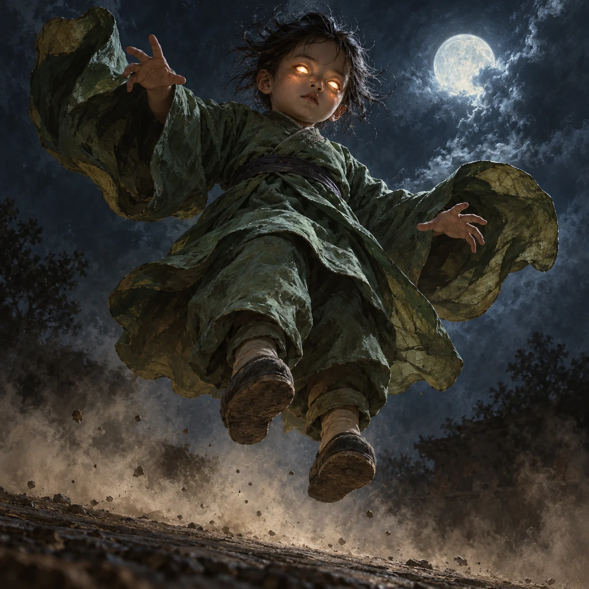
Huoxing, the uncanny child spirit of Mars
Aura: Threat or awe through documented anatomy ['wd-q15925221-c01', 'wd-q15925221-c03'] and action ['wd-q15925221-c04', 'wd-q15925221-c06', 'wd-q15925221-c07']; no generic aura.
Audit ciri dan sumber
- [object Object]
- [object Object]
- [object Object]
Native PNG and 200px thumbnail inspected. Subject dominates, active threatening or awe-inspiring moment, claim-mapped anatomy/effects/setting, no text, watermark or generic aura; all seven Sangar checks pass.
Review sumberONE original square premium painterly cinematic Mitoloka illustration of Huoxing, the uncanny child spirit of Mars.
ANATOMY: Exactly one child about six or seven years old, one head, two luminous eyes, two arms and two legs, plain fully opaque historical green robe and trousers, no crown, horns, weapons or extra eyes. [wd-q15925221-c01, wd-q15925221-c03]
MOMENT: Rise abruptly off the ground toward the viewer, green sleeves swept upward, look down with intensely luminous eyes that illuminate cheeks and frighten unseen witnesses.
POWER: The documented eyes emit light, and the child rises into the sky; light confined to eyes and their immediate physical illumination. [wd-q15925221-c04, wd-q15925221-c06, wd-q15925221-c07]
SCALE & CAMERA: Extreme low angle close portrait, child levitates visibly with feet above ground, eyes and green robe dominate.
LIGHT & WEATHER: one dominant cold moonlight source, sharp rim light, deep warm walnut shadows, natural dust or mist.
SURFACE: tactile coarse weathered surfaces, rich painterly texture, no plastic finish.
SETTING: A dark outdoor courtyard in historical China, indistinct plain ground without buildings or writing. [wd-q15925221-c03, wd-q15925221-c07]
MOOD: menacing or awe-inspiring, dangerous and imposing, never cute, calm or decorative.
HARD CONSTRAINTS: no text, pseudoinscriptions, lettering, logo, border, frame or watermark; no extra heads, limbs or fingers; no design borrowed from film, game, anime or comic; opaque full clothing for humanoids; no nudity or explicit gore; no generic glow aura, neon outline, energy ribbons or magic symbols.
辮子姑娘
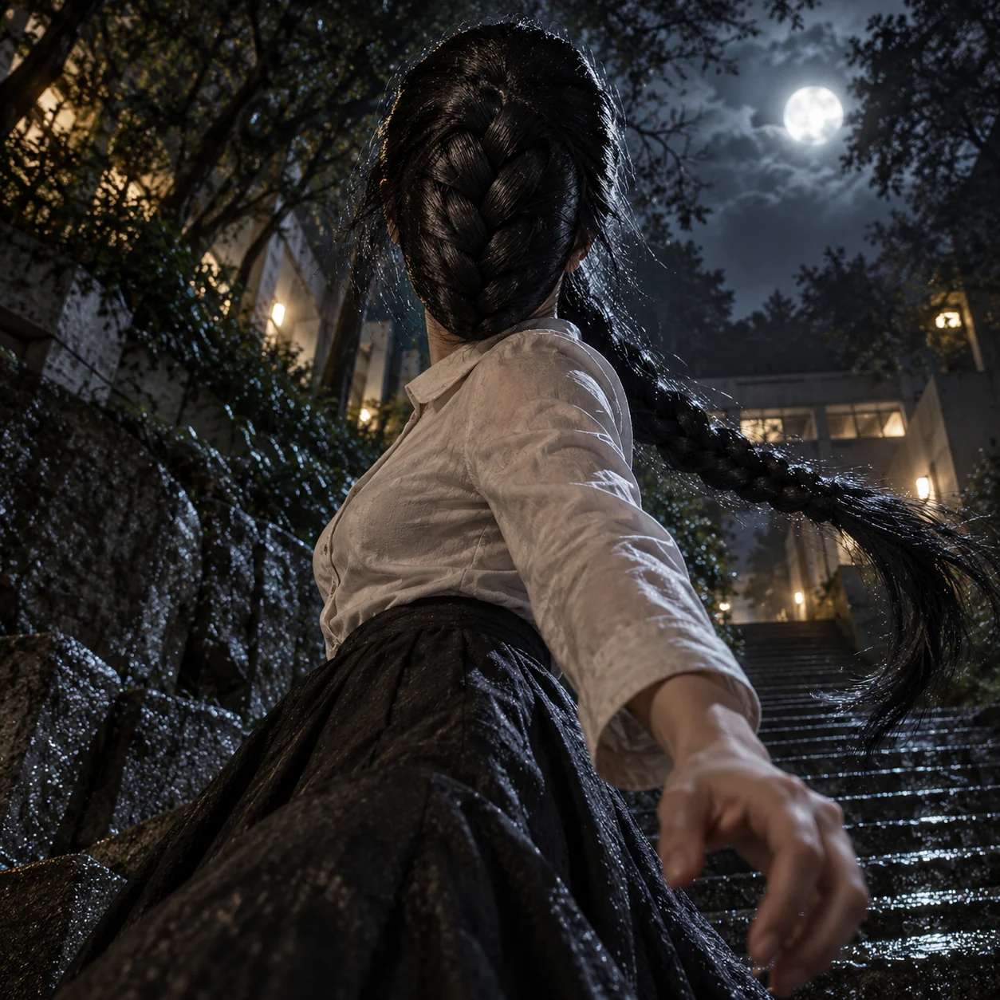
Braid-for-face variant, without the bloody train/bus accident version.
Aura: A human form turns to reveal only a braid instead of a face c03; no invented magic or gore.
Audit ciri dan sumber
- [object Object]
- [object Object]
Native and 200px inspected: girl turns toward viewer and front of head is a braid with no facial eyes/nose/mouth, second long braid swings from back, forward-reaching hand and turning action clear. Small side ear is visible, compatible with chosen c03 braid-face variant (c09 bloody fully featureless variant excluded). No gore, text, aura or giant scale. All seven Sangar checks pass.
Review sumberONE original square premium painterly cinematic Mitoloka illustration of Braided Girl, the Hong Kong campus ghost whose face is another braid when she turns around.
ANATOMY: exactly one adult young woman's body, one head, two arms and two legs, fully covered in plain opaque 1960s blouse and long dark skirt; long black braid down back. The FRONT of her head is ALSO entirely a thick vertically woven black braid from forehead to chin, absolutely no eyes, nose, mouth or ears visible, no human face hiding under hair, no gore [wd-q15940964-c03] [wd-q15940964-c03, wd-q15940964-c01, wd-q15940964-c08]
MOMENT: Whip her head and shoulders around toward viewer mid-step, one hand reaching backward while front braid-face swings into close view, back braid whips outward; confront viewer with total absence of a face
POWER: No documented visible supernatural power; uncanny documented braid-in-place-of-face revelation only [wd-q15940964-c03]
SCALE & CAMERA: extreme low angle; tight low-angle waist-up from stair-path level, head and braid-face dominate half of frame, human scale unchanged
LIGHT & WEATHER: one dominant moonlight source, strong rim light, deep dark warm shadows, natural spray or dust appropriate to setting
SURFACE: heavy wet tightly plaited black hair, worn opaque cotton blouse and skirt, damp campus stone
SETTING: Braid Path on the CUHK campus between the stairs of Wah Lien Hall and Chung Chi Tang, no signage anywhere [wd-q15940964-c01,wd-q15940964-c08]
MOOD: menacing, dangerous and imposing, never cute, calm or decorative
HARD CONSTRAINTS: no text, pseudoinscriptions, lettering, logo, border, frame or watermark; no extra heads, limbs or fingers; no borrowed film, game, anime or comic design; no nudity or explicit gore; no generic glow aura, neon outline or energy ribbons.
蝮虫
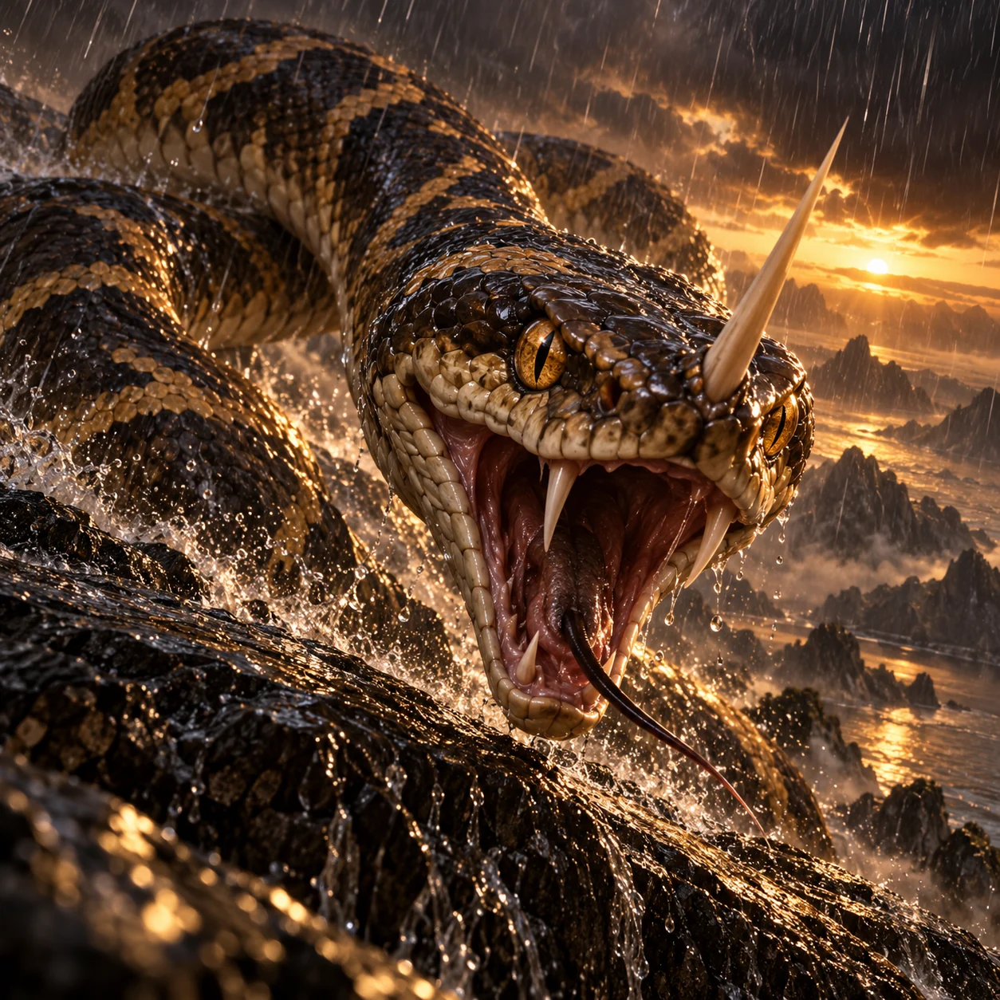
ribbon-patterned nasal-spined Fuchong
Aura: No invented venom effects; surge with open jaws and nose needle toward viewer, rain displaced by head movement wd-q17060549-c01
Audit ciri dan sumber
- [object Object]
- [object Object]
- [object Object]
Native and200 inspected. One limbless banded serpent with single prominent nose needle c03 strikes over rain-wet rock c07. Heavy coils c04, no giant-scale comparator, poison glow, extra horns or text. Foreground mountain bare. All seven Sangar yes.
Review sumberONE original square premium painterly cinematic Mitoloka illustration of 蝮虫, ribbon-patterned nasal-spined Fuchong.
ANATOMY: One heavy limbless venomous serpent with ribbon-patterned scales and exactly one needlelike nose spine, one head two eyes, no limbs wings or other horns [c01, c03, c04]
MOMENT: Strike across a black rain-wet boulder toward viewer, nose needle prominent against dark sky, heavy coils wedge behind head.
POWER: No invented venom effects; surge with open jaws and nose needle toward viewer, rain displaced by head movement [c01]
SCALE & CAMERA: extreme low angle; close foreshortened framing with subject filling most of the square, no invented giant size unless explicitly stated above.
LIGHT & WEATHER: one low amber sunset through heavy rain, sharp rim light, deep shadows; dark walnut and antique gold palette with one strong accent.
SURFACE: wet banded scales, hard ivory nose needle, dark slick rock.
SETTING: Plantless wet Mount Yu with frequent rain and water below [c07]
MOOD: menacing southern serpent; dangerous or awe-inspiring and imposing, never cute, calm or decorative.
HARD CONSTRAINTS: no text, writing, lettering, inscriptions, pseudoinscriptions, symbols, logo, border, frame or watermark; no extra heads, limbs or fingers; no design borrowed from any film, game, anime or comic; no nudity or explicit gore; no generic glow aura, neon outline or energy ribbons. Entirely original living creature; no statue or toy.
一本だたら
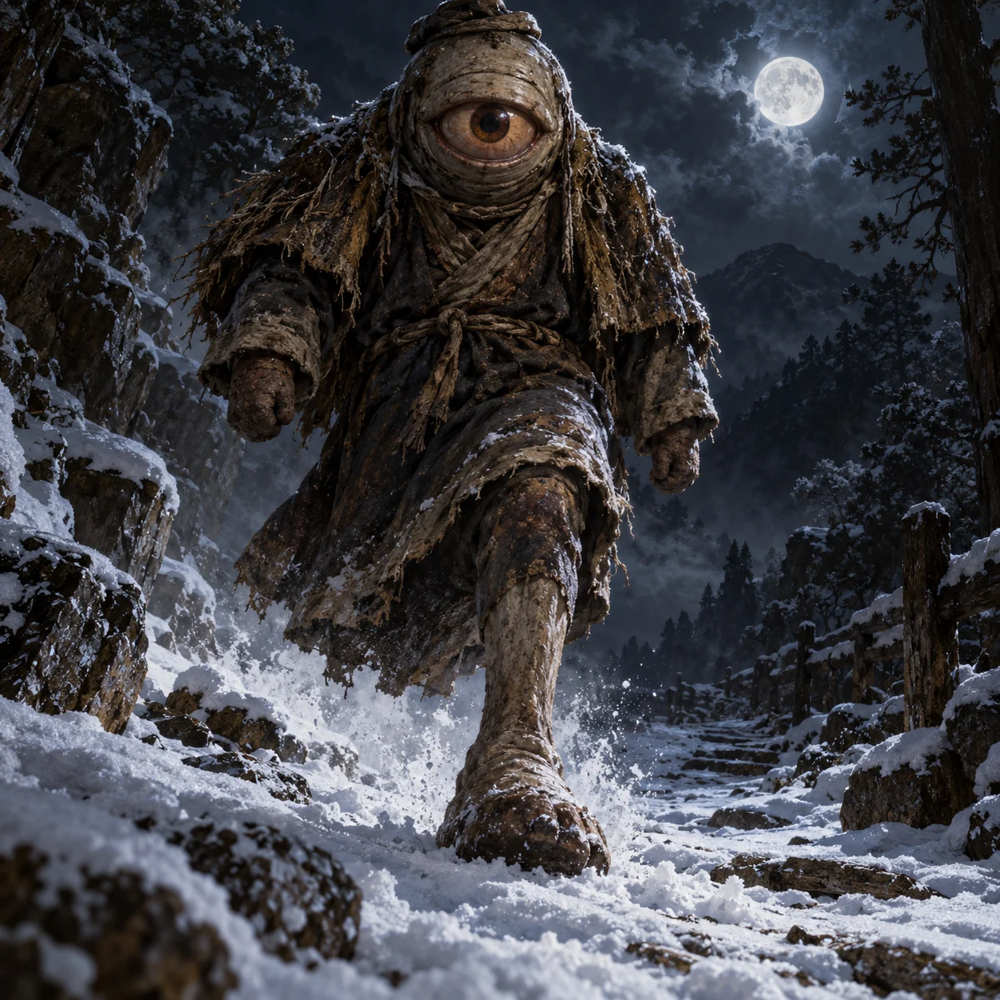
Ippon-datara, the one-eyed one-legged mountain yokai
Aura: Threat or awe through documented anatomy ['wd-q17193315-c01', 'wd-q17193315-c03'] and action []; no generic aura.
Audit ciri dan sumber
- [object Object]
- [object Object]
Native PNG and 200px thumbnail inspected. Subject dominates, active threatening or awe-inspiring moment, claim-mapped anatomy/effects/setting, no text, watermark or generic aura; all seven Sangar checks pass.
Review sumberONE original square premium painterly cinematic Mitoloka illustration of Ippon-datara, the one-eyed one-legged mountain yokai.
ANATOMY: Exactly one tall polelike humanoid body, ONE single large central eye and exactly ONE central leg ending in one broad foot; two short arms; rough opaque long tunic covers body; no second eye, no second leg, no horns. [wd-q17193315-c01, wd-q17193315-c03]
MOMENT: Hop hard toward the viewer through a snowy mountain path, broad single foot drives down into snow, solitary eye fixed on camera.
POWER: No magical effect; one-legged locomotion and strange anatomy only, harmless polelike variant. []
SCALE & CAMERA: Low full-body close view, sole leg and single eye clearly countable, no giant scale.
LIGHT & WEATHER: one dominant cold moonlight source, sharp rim light, deep warm walnut shadows, natural dust or mist.
SURFACE: tactile coarse weathered surfaces, rich painterly texture, no plastic finish.
SETTING: A dark Japanese mountain path at winter night. [wd-q17193315-c02]
MOOD: menacing or awe-inspiring, dangerous and imposing, never cute, calm or decorative.
HARD CONSTRAINTS: no text, pseudoinscriptions, lettering, logo, border, frame or watermark; no extra heads, limbs or fingers; no design borrowed from film, game, anime or comic; opaque full clothing for humanoids; no nudity or explicit gore; no generic glow aura, neon outline, energy ribbons or magic symbols.
狽
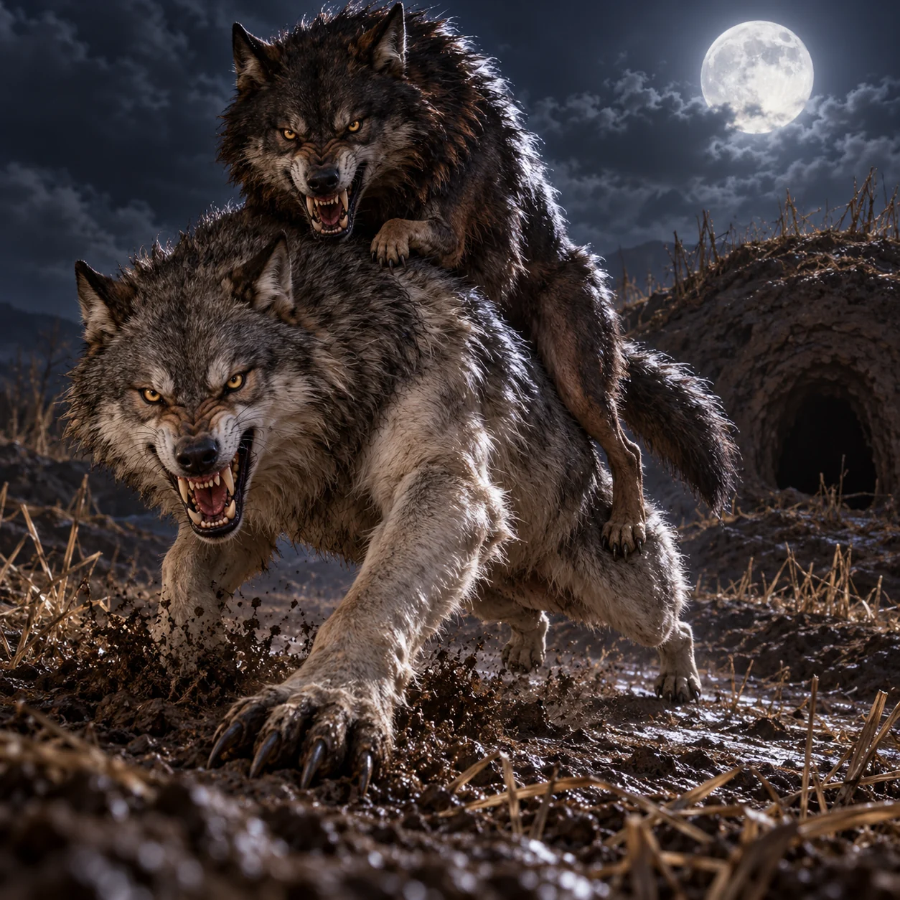
Short-foreleg Bei rides short-hindleg Lang; excludes the alternative no-foreleg variant.
Aura: Opposite abbreviated leg sets c01/c02 and dependent movement c03 create uncanny predatory partnership without invention.
Audit ciri dan sumber
- [object Object]
- [object Object]
- [object Object]
Native and 200px inspected: two distinct wolf-like animals, upper short-foreleg Bei rides lower long-foreleg/short-hindleg Lang. Visible upper short forepaw and long rear leg plus lower opposing proportions are clear; far limbs naturally occluded, no merged torsos/heads. Both snarl and move, no magic/text/gore. All seven Sangar checks pass.
Review sumberONE original square premium painterly cinematic Mitoloka illustration of Bei, a wolf-like animal with very short forelegs riding its lang companion with very short hind legs.
ANATOMY: exactly TWO separate wolf-like animals, one head and two eyes each, four legs and one tail each. UPPER dark-furred BEI has two conspicuously tiny short forelegs held up in front of its chest and two long hindlegs; it straddles the LOWER grey-furred LANG's back. LOWER LANG has two long forelegs planted at front and two conspicuously tiny short hindlegs at rear. Separate torsos, no shared heads or merged limbs, no horns or wings [wd-q18654534-c01,wd-q18654534-c02,wd-q18654534-c08] [wd-q18654534-c01, wd-q18654534-c02, wd-q18654534-c08, wd-q18654534-c03, wd-q18654534-c06]
MOMENT: Move as one predatory pair diagonally toward viewer, upper Bei riding and gripping lower Lang while both bare teeth toward camera, lower long front paws rake soil; their opposing short-leg anatomy is fully visible
POWER: Neither can move independently without mutual help [wd-q18654534-c03]; show bodily cooperation only, no supernatural effects
SCALE & CAMERA: extreme low angle; low three-quarter SIDE view close enough for both fierce heads to dominate, include both separate bodies and shortened leg sets clearly; no giant scale
LIGHT & WEATHER: one dominant moonlight source, strong rim light, deep dark warm shadows, natural spray or dust appropriate to setting
SURFACE: rough dark-brown and ash-grey wolf fur, old claw nails, wet packed soil and dried stalks
SETTING: beside a Chinese wolf mound/burrow west of Linji, subdued earth and few straw stalks [wd-q18654534-c06]
MOOD: menacing, dangerous and imposing, never cute, calm or decorative
HARD CONSTRAINTS: no text, pseudoinscriptions, lettering, logo, border, frame or watermark; no extra heads, limbs or fingers; no borrowed film, game, anime or comic design; no nudity or explicit gore; no generic glow aura, neon outline or energy ribbons.
白うかり
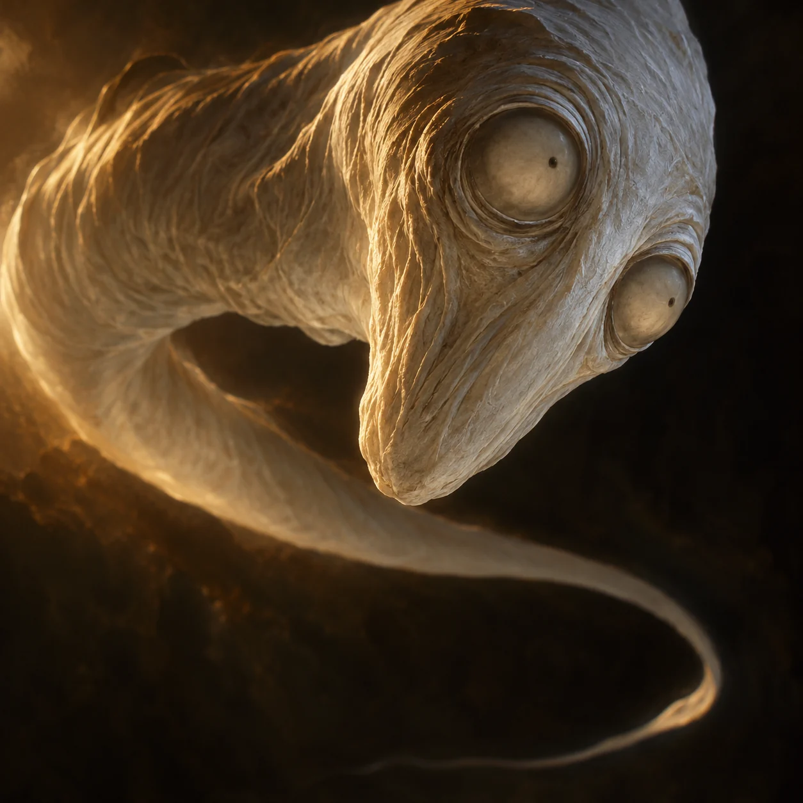
elongated white ghost with very long tail and large distant-staring eyes
Aura: No documented power or behavior; uncanny force through suspended white body sweeping close across viewer in a single curved motion, no aura or beams
Audit ciri dan sumber
- [object Object]
- [object Object]
Native and200 inspected: elongated white ghost with very long tapering tail, two huge vacant distant-staring eyes c02/c05. Narrow wrinkled face and tiny pupils remove cute sad eyes of rejected first attempt. Suspended curved close movement, no extra limbs, text or aura. All seven Sangar yes.
Review sumberONE original square premium painterly cinematic Mitoloka illustration of 白うかり, elongated white ghost with very long tail and large distant-staring eyes.
ANATOMY: One white ghostlike spirit with an elongated body tapering into a VERY LONG single tail, a long narrow wrinkled head with exactly two huge unblinking lidless eyes, pale irises with tiny off-center pupils, no eye shine or baby proportions; expression completely blank and alien, not sad or friendly; these are large vacant eyes staring into distance, no legs or wings or invented horns [c02, c05]
MOMENT: Sweep past just above viewer, head and large staring eyes close in foreground, elongated white body and very long tapering tail arc behind into deep darkness. Keep eyes vacant and distant rather than angry.
POWER: No documented power or behavior; uncanny force through suspended white body sweeping close across viewer in a single curved motion, no aura or beams []
SCALE & CAMERA: extreme low angle; close foreshortened framing with subject filling most of the square, no invented giant size unless explicitly stated above.
LIGHT & WEATHER: single low amber side light, sharp rim light, deep shadows; dark walnut and antique gold palette with one strong accent.
SURFACE: pale wrinkled ghostly surface with dry parchment-like leathery texture, not fabric, deep natural shadows.
SETTING: Featureless dark space, source gives no specific habitat [c04]
MOOD: awe-inspiring uncanny ghost with absent-minded vacant gaze, not hostile evil or cute; dangerous or awe-inspiring and imposing, never cute, calm or decorative.
HARD CONSTRAINTS: no cute sheet ghost, no big glossy cartoon eyes, no sad expression; no text, writing, lettering, inscriptions, pseudoinscriptions, symbols, logo, border, frame or watermark; no extra heads, limbs or fingers; no design borrowed from any film, game, anime or comic; no nudity or explicit gore; no generic glow aura, neon outline or energy ribbons. Entirely original living creature; no statue or toy.
野狗子
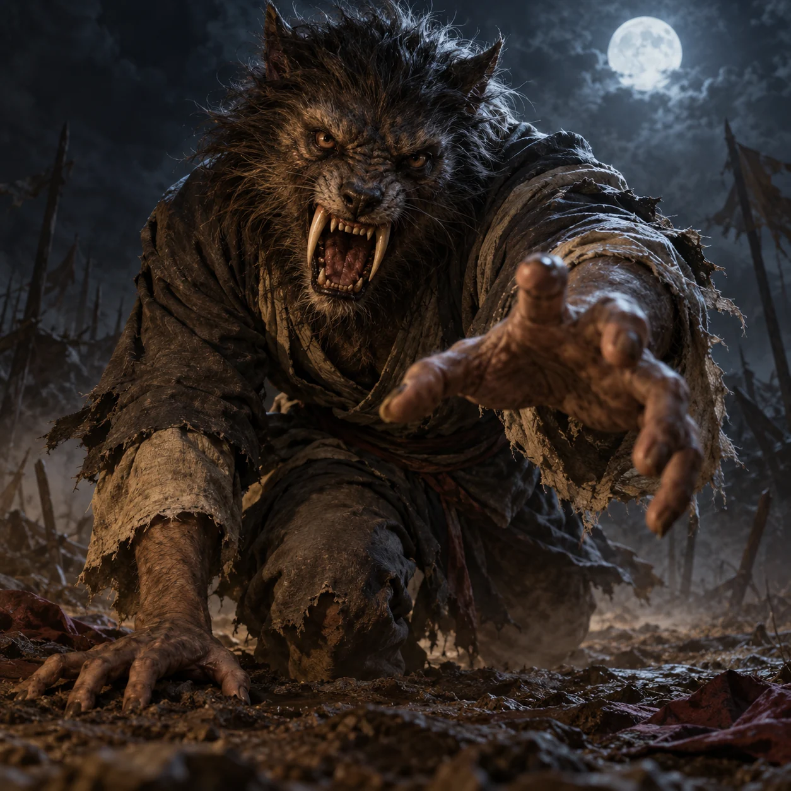
Yegouzi, the beast-headed human-bodied creature from Pu Songling
Aura: Threat or awe through documented anatomy ['wd-q22098758-c02', 'wd-q22098758-c05', 'wd-q22098758-c06'] and action ['wd-q22098758-c02', 'wd-q22098758-c05']; no generic aura.
Audit ciri dan sumber
- [object Object]
- [object Object]
- [object Object]
Native PNG and 200px thumbnail inspected. Subject dominates, active threatening or awe-inspiring moment, claim-mapped anatomy/effects/setting, no text, watermark or generic aura; all seven Sangar checks pass.
Review sumberONE original square premium painterly cinematic Mitoloka illustration of Yegouzi, the beast-headed human-bodied creature from Pu Songling.
ANATOMY: Exactly one creature with one fierce unspecified mammalian beast head, two eyes, human-shaped torso, two human arms and two legs; two long sharply curved fangs visible; coarse dark fur on head; full plain opaque ragged robe and trousers. No wings or horns. [wd-q22098758-c02, wd-q22098758-c05, wd-q22098758-c06]
MOMENT: Lunge into foreground from deep night shadow, open mouth to expose curved fangs, one human hand brace on earth while the other reaches toward viewer.
POWER: No magical effect or gore; threatening physical approach, no corpses or brain eating depicted. [wd-q22098758-c02, wd-q22098758-c05]
SCALE & CAMERA: Tight low-angle close-up; subject fills frame, no invented giant scale.
LIGHT & WEATHER: one dominant cold moonlight source, sharp rim light, deep warm walnut shadows, natural dust or mist.
SURFACE: tactile coarse weathered surfaces, rich painterly texture, no plastic finish.
SETTING: A dark indistinct battlefield clearing, empty ground with discarded plain cloth but no visible corpses. [wd-q22098758-c02, wd-q22098758-c04]
MOOD: menacing or awe-inspiring, dangerous and imposing, never cute, calm or decorative.
HARD CONSTRAINTS: no text, pseudoinscriptions, lettering, logo, border, frame or watermark; no extra heads, limbs or fingers; no design borrowed from film, game, anime or comic; opaque full clothing for humanoids; no nudity or explicit gore; no generic glow aura, neon outline, energy ribbons or magic symbols.
狰
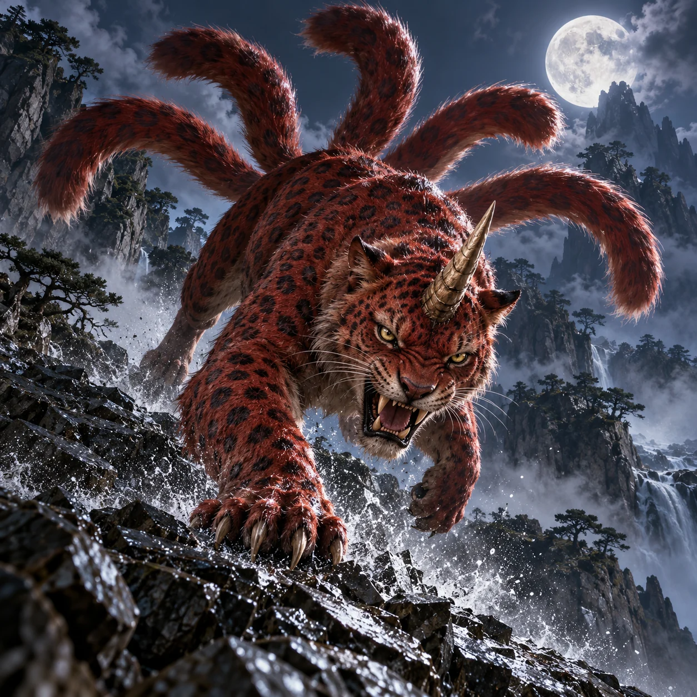
Red leopard form with exactly five tails and one horn, excludes winged fox alternative.
Aura: Five tails and one horn on red leopard c01/c05 create documented uncanny danger with physical leap and light.
Audit ciri dan sumber
- [object Object]
- [object Object]
Native and 200px inspected: red leopard-like beast has exactly five distinct fanned tails, all tips visible, one forehead horn, one head and four feline limbs. Clear lunging action, no magic or alternative fox wings, no text. All seven Sangar checks pass.
Review sumberONE original square premium painterly cinematic Mitoloka illustration of Zheng, the red leopard-like Chinese mythical beast with five tails and one horn.
ANATOMY: exactly ONE red leopard-like head with two eyes, exactly ONE prominent horn centered on its forehead, FOUR feline legs, and EXACTLY FIVE long separate furry tails growing from rump, fanned far apart with all five tips inside the frame; dark red russet spotted fur, NO wings or second horn [wd-q22099495-c01,wd-q22099495-c05] [wd-q22099495-c01, wd-q22099495-c05, wd-q22099495-c03]
MOMENT: Leap down a mountain ledge toward camera snarling, one front paw striking wet rock, single forehead horn thrust forward, FIVE tails flaring apart behind like a clearly countable five-pronged fan
POWER: No documented visible magic; menace through red leopard body, single horn and five tails only. Its stone-striking cry is not shown as magic shockwaves
SCALE & CAMERA: extreme low angle; extreme low three-quarter view, fierce red face and forepaw dominate lower half, rump and five fanned tails remain fully visible above, no cropped tail tips, no unsupported giant size
LIGHT & WEATHER: one dominant moonlight source, strong rim light, deep dark warm shadows, natural spray or dust appropriate to setting
SURFACE: coarse damp dark-red spotted fur, rough ivory-brown horn, five wet furry tails, shattered mountain shale
SETTING: Mount Zhang'e in the Shan Hai Jing [wd-q22099495-c03,wd-q22099495-c05]
MOOD: menacing, dangerous and imposing, never cute, calm or decorative
HARD CONSTRAINTS: no text, pseudoinscriptions, lettering, logo, border, frame or watermark; no extra heads, limbs or fingers; no borrowed film, game, anime or comic design; no nudity or explicit gore; no generic glow aura, neon outline or energy ribbons.
举父
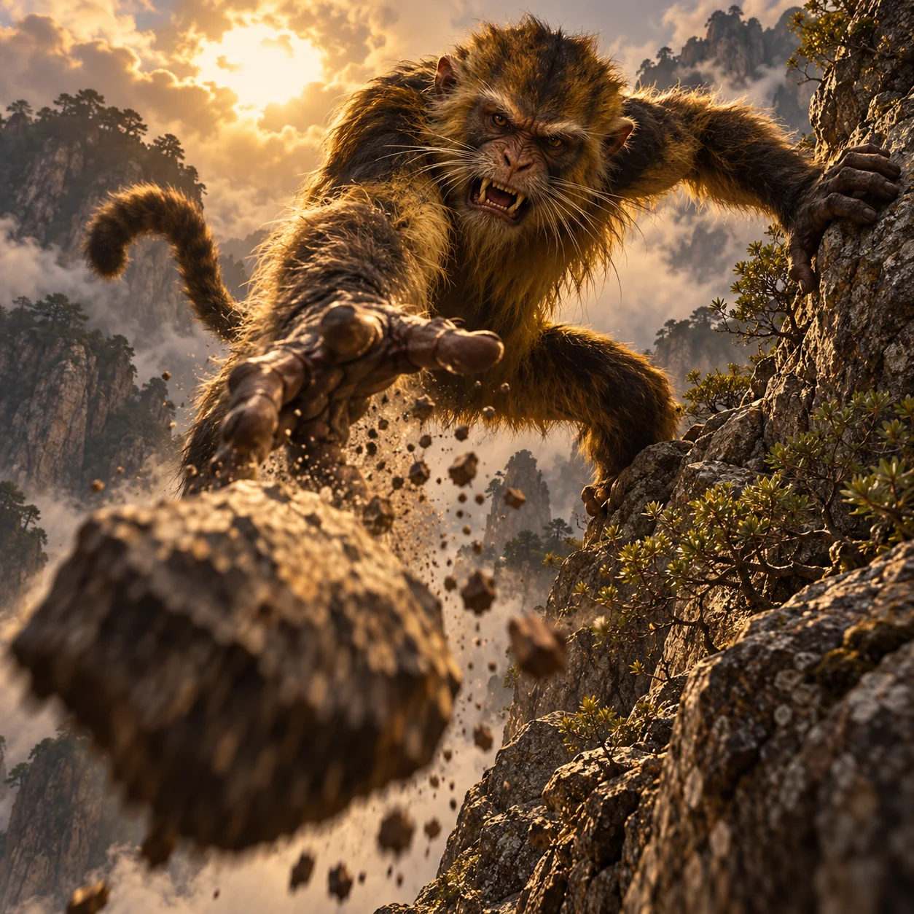
yellowish-black long-armed whiskered Jufu of Bencao account
Aura: Throw a heavy stone directly toward viewer, fist releasing rock and a physically disturbed grit trail, no magic wd-q22101134-c04,wd-q22101134-c09,wd-q22101134-c10
Audit ciri dan sumber
- [object Object]
- [object Object]
- [object Object]
Native and200 inspected. Yellow-black long-armed heavily whiskered monkey c10 throws foreground stone c09; two arms two legs one head and tail, near small shrub gives size. No conflicting leopard anatomy, extra birds, aura or text. All seven Sangar yes.
Review sumberONE original square premium painterly cinematic Mitoloka illustration of 举父, yellowish-black long-armed whiskered Jufu of Bencao account.
ANATOMY: One dog-sized monkey-like beast, yellowish-black body, heavy whiskers, long arms, one head two eyes two arms two legs and monkey tail; no leopard features or bird wings [c01, c10]
MOMENT: Hurl a stone downward toward the viewer while clinging to rock with other long arm, whiskered face grim and teeth bared; airborne stone large in foreground but not blocking face.
POWER: Throw a heavy stone directly toward viewer, fist releasing rock and a physically disturbed grit trail, no magic [c04, c09, c10]
SCALE & CAMERA: extreme low angle; close foreshortened framing with subject filling most of the square, no invented giant size unless explicitly stated above.
LIGHT & WEATHER: one low warm sun behind mountain cloud, sharp rim light, deep shadows; dark walnut and antique gold palette with one strong accent.
SURFACE: matted yellow-black fur, wiry whiskers, rough stone and grit.
SETTING: Jianping mountain rocks with nearby shrub giving dog-size comparator [c10]
MOOD: menacing stone-throwing beast; dangerous or awe-inspiring and imposing, never cute, calm or decorative.
HARD CONSTRAINTS: no text, writing, lettering, inscriptions, pseudoinscriptions, symbols, logo, border, frame or watermark; no extra heads, limbs or fingers; no design borrowed from any film, game, anime or comic; no nudity or explicit gore; no generic glow aura, neon outline or energy ribbons. Entirely original living creature; no statue or toy.
はじかき
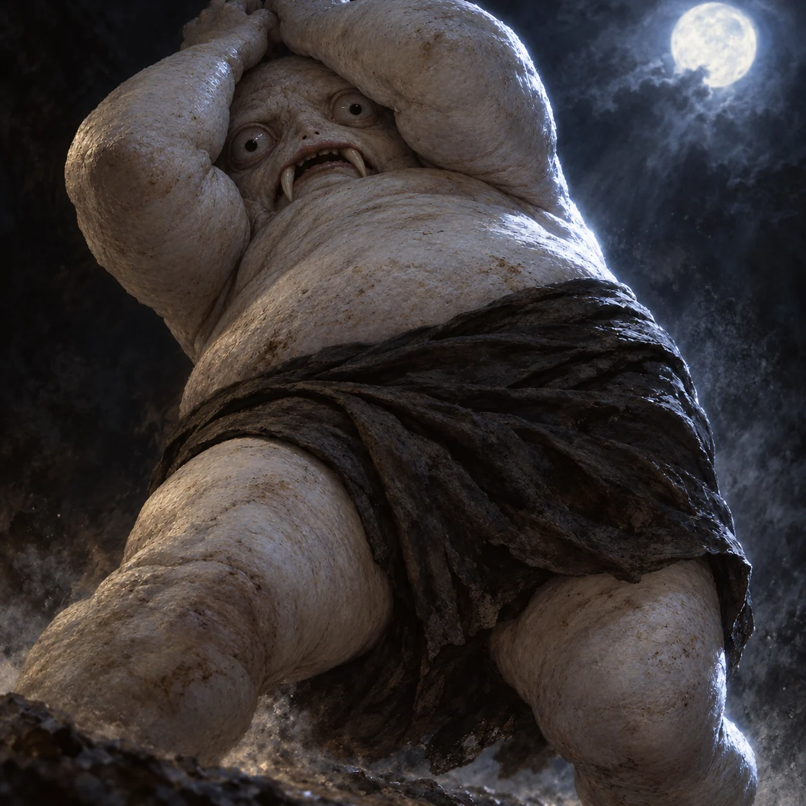
Hajikaki, the strange white blobby fang-bearing yokai
Aura: Threat or awe through documented anatomy ['wd-q28685478-c02', 'wd-q28685478-c04'] and action []; no generic aura.
Audit ciri dan sumber
- [object Object]
- [object Object]
Corrected attempt02 inspected native and 200px. Large puppy pupils replaced by small natural pupils in broad pale round eyes; waxy uneven hairless skin and deep shadows now read uncanny rather than mascot. White plump blobby body, one head, two eyes, two protruding fangs, two arms raised to hide face, two legs and opaque waist wrap preserved. Embarrassed pathetic recoil and harmless disposition retained, no invented aggression, powers or size. Close uncanny form dominates; no text or gore. All seven Uji Sangar answers yes.
Review sumberEDIT the supplied Hajikaki illustration while preserving the composition and documented anatomy exactly: one plump white HAIRLESS blobby humanoid, one head, two large ROUND eyes, TWO long protruding fangs, TWO raised arms hiding its face in embarrassed shame, TWO legs, plain opaque dark waist wrap. Preserve harmless pathetic disposition and awkward recoil, never turn it into an attacker. [wd-q28685478-c02, wd-q28685478-c04]
TARGETED CHANGES: Replace the enormous glossy black puppy pupils with SMALL natural black pupils surrounded by broad pale grey irises and off-white sclera, keeping eyes round. Remove cartoon facial softness: model realistic uneven waxy white skin, pores, folds, weathering, subtle creases, no fur. The TWO fangs remain clearly protruding, separated and readable. Mouth stays downturned and embarrassed, NEVER smiling or snarling aggressively.
LIGHT: Low sinister raking moonlight from one side with deep walnut shadows and an austere uncanny silhouette; much harsher facial shadow, no bright even facial illumination or pretty catchlights.
Keep both raised arms framing and partly covering the head, keep physical recoil as the moment. Keep close low camera and ordinary scale, indistinct empty ground. No powers are documented; no visible magic or power effects. [wd-q28685478-c01, wd-q28685478-c05]
MOOD: an unsettling uncanny yokai intruding into close view while ashamed and pathetic, visually overwhelming through alien eyes, waxen skin, fangs and shadows; absolutely no cute mascot, toy, plush, cartoon baby, puppy expression or smile.
HARD CONSTRAINTS: Preserve exact head/eye/arm/leg/fang counts, no new anatomy, no extra fingers; no giant scale, violence, aggression, powers, glow aura, neon or ribbons; no text, pseudotext, lettering, logo, watermark, border, nudity or gore; original painterly cinematic rendering, no borrowed media design.
Loyma
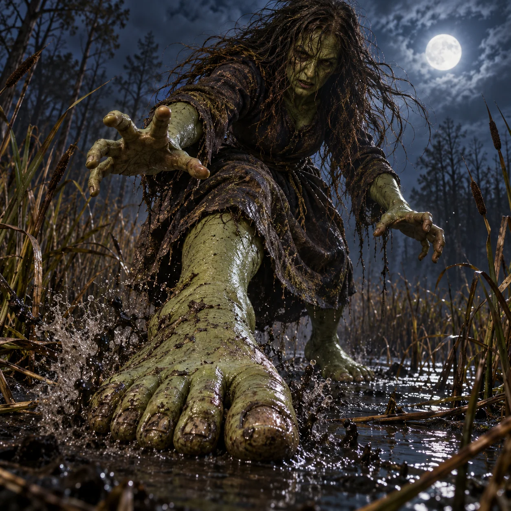
Ugly medium-height green woman with ordinary hands and enormous feet, not beautiful-girl variant.
Aura: Green body, tangled hair and enormous feet c05 make physical threat in marsh c02; no invented effects.
Audit ciri dan sumber
- [object Object]
- [object Object]
Native and 200px inspected: medium-height green woman lunges with huge five-toed foot foreground, ordinary hands and long tangled hair, fully opaque dress. Distinctive body and feet readable, no giant-body enlargement, no invented magic/claws/horns/text/gore. All seven Sangar checks pass.
Review sumberONE original square premium painterly cinematic Mitoloka illustration of Loyma, the frightful green-bodied marsh woman of Belarusian folklore with enormous feet.
ANATOMY: one ugly adult female spirit of MEDIUM HUMAN HEIGHT, one head, two eyes, two ordinary human hands and two legs, GREEN skin and long dense tangled hair; two ENORMOUS oversized human-shaped feet, each five toes, visibly far larger than a normal human foot, no claws, horns, fangs, wings or invented anatomy; full opaque weathered dark dress covers torso and thighs, lower green shins and huge feet visible [wd-q31817365-c02,wd-q31817365-c05] [wd-q31817365-c02, wd-q31817365-c05, wd-q31817365-c01]
MOMENT: Lunge out of marsh reeds toward camera, plant one enormous green foot in near foreground throwing muddy water aside, reach with two ordinary human hands, tangled hair whips across angry face
POWER: No documented visible magic; frightening predatory marsh approach c01/c02 only, ordinary mud displaced by the huge feet, no cursed mist
SCALE & CAMERA: extreme low angle; extreme low close view at swamp level, one oversized foot fills foreground while green face and long tangled hair loom above; body medium human height, not a giant
LIGHT & WEATHER: one dominant moonlight source, strong rim light, deep dark warm shadows, natural spray or dust appropriate to setting
SURFACE: rough green skin, matted damp hair, cracked muddy toenails, coarse opaque wet cloth, black marsh peat
SETTING: a Belarusian forest marsh where the spirit frightens people [wd-q31817365-c01,wd-q31817365-c02]
MOOD: menacing, dangerous and imposing, never cute, calm or decorative
HARD CONSTRAINTS: no text, pseudoinscriptions, lettering, logo, border, frame or watermark; no extra heads, limbs or fingers; no borrowed film, game, anime or comic design; no nudity or explicit gore; no generic glow aura, neon outline or energy ribbons.
Esrel
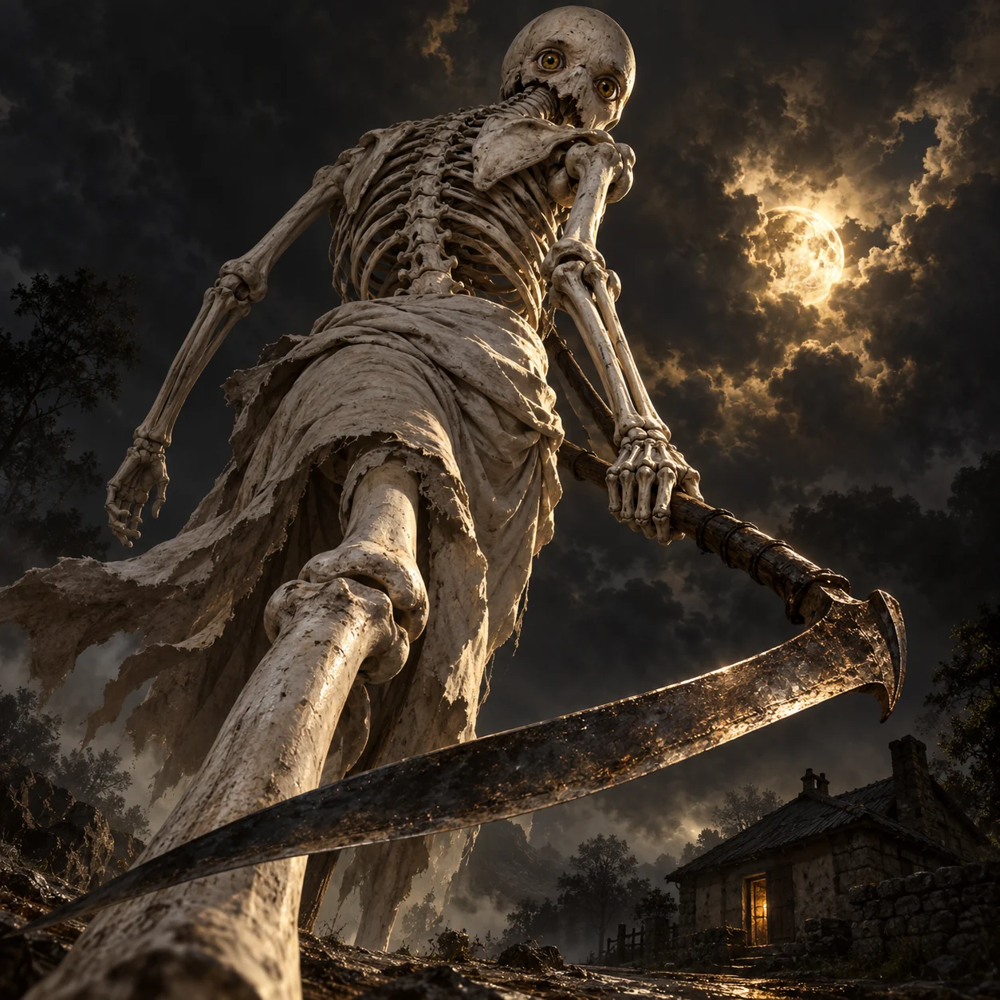
house-tall white skeletal Esrel with rear-facing eyes and scythe
Aura: Advance with scythe lowered toward foreground, no victim, invisible blood or joint-cutting; documented soul-taking implied by approach only wd-q4532797-c02,wd-q4532797-c05,wd-q4532797-c08
Audit ciri dan sumber
- [object Object]
- [object Object]
- [object Object]
Native and200 inspected. White house-tall skeleton with scythe c08 strides past viewer, spine and rear cranium with two eyes clearly shown; no mouth/nose on rear. Opaque pelvis wrap, no victim/gore, magic or text. Documented scale versus house. All seven Sangar yes.
Review sumberONE original square premium painterly cinematic Mitoloka illustration of Esrel, house-tall white skeletal Esrel with rear-facing eyes and scythe.
ANATOMY: One house-tall white skeletal human-shaped death spirit, one skull, two arms two legs, eyes located visibly on BACK OF HEAD, not face. Show rear three-quarter view: pair of living eyes embedded in rear cranium stare at viewer; bare skeleton torso and arms, opaque plain wrapped cloth covering pelvis, one large scythe held in hand [c01, c08]
MOMENT: Stride past viewer while rotating skeletal shoulders so the BACK of skull with two eyes dominates upper foreground; scythe blade sweeps diagonally below without touching anyone, tiny house below establishes documented scale.
POWER: Advance with scythe lowered toward foreground, no victim, invisible blood or joint-cutting; documented soul-taking implied by approach only [c02, c05, c08]
SCALE & CAMERA: extreme low angle; close foreshortened framing with subject filling most of the square, no invented giant size unless explicitly stated above.
LIGHT & WEATHER: one low moon through deep cloud, sharp rim light, deep shadows; dark walnut and antique gold palette with one strong accent.
SURFACE: weathered white bone, tarnished iron scythe, rough opaque cloth.
SETTING: Outside a small shadowed human house at threshold of this world and afterlife [c05, c08, c10]
MOOD: reverent awe-inspiring impartial death spirit, not gleefully evil; dangerous or awe-inspiring and imposing, never cute, calm or decorative.
HARD CONSTRAINTS: no text, writing, lettering, inscriptions, pseudoinscriptions, symbols, logo, border, frame or watermark; no extra heads, limbs or fingers; no design borrowed from any film, game, anime or comic; no nudity or explicit gore; no generic glow aura, neon outline or energy ribbons. Entirely original living creature; no statue or toy.
三足鳖
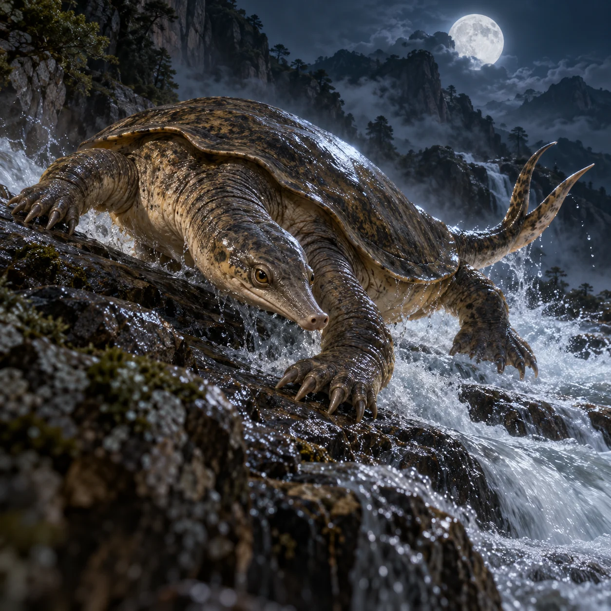
Sanzu Bie, the three-legged softshell turtle with forked tail
Aura: Threat or awe through documented anatomy ['wd-q9382976-c01', 'wd-q9382976-c07'] and action []; no generic aura.
Audit ciri dan sumber
- [object Object]
- [object Object]
Native PNG and 200px thumbnail inspected. Subject dominates, active threatening or awe-inspiring moment, claim-mapped anatomy/effects/setting, no text, watermark or generic aura; all seven Sangar checks pass.
Review sumberONE original square premium painterly cinematic Mitoloka illustration of Sanzu Bie, the three-legged softshell turtle with forked tail.
ANATOMY: Exactly one softshell turtle, one long flat soft-shelled body, one head with a long soft snout and two eyes, exactly THREE broad clawed legs total: two front legs and ONE central rear leg; one clearly FORKED tail with two tapering tips. No fourth leg, no spikes or dragon features. [wd-q9382976-c01, wd-q9382976-c07]
MOMENT: Clamber out of mountain river toward viewer, forelegs pull against wet rock, body twists so single rear leg and forked tail are fully visible.
POWER: No magical effect; physical water spray from movement only. []
SCALE & CAMERA: Low three-quarter close-up from waterline, whole body and exactly3legs plus forkedtail stay inframe, fill85percent.
LIGHT & WEATHER: one dominant cold moonlight source, sharp rim light, deep warm walnut shadows, natural dust or mist.
SURFACE: tactile coarse weathered surfaces, rich painterly texture, no plastic finish.
SETTING: Cong water emerging on top of Mount Cong, rocky mountain stream at night. [wd-q9382976-c07]
MOOD: menacing or awe-inspiring, dangerous and imposing, never cute, calm or decorative.
HARD CONSTRAINTS: no text, pseudoinscriptions, lettering, logo, border, frame or watermark; no extra heads, limbs or fingers; no design borrowed from film, game, anime or comic; opaque full clothing for humanoids; no nudity or explicit gore; no generic glow aura, neon outline, energy ribbons or magic symbols.
却尘犀
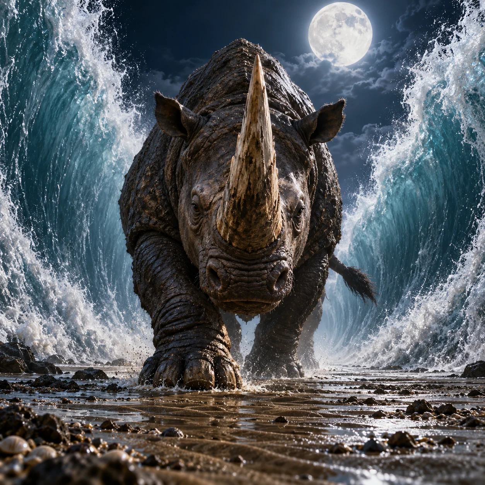
Bishuixi sea-walking water-parting variant named in the Quechenxi source; dust-repelling and light-giving powers excluded.
Aura: Sea physically parts for documented Bishuixi c07, making rhinoceros-like sea beast c01 unmistakably supernatural.
Audit ciri dan sumber
- [object Object]
- [object Object]
- [object Object]
Native and 200px inspected: one horn, two eyes, intact rhino body with occluded rear limbs, advancing head-on through physically parted sea c07; no invented fins/glow/giant scale. All seven Sangar checks pass. Selected documented Bishuixi variant, no merging dust or light powers.
Review sumberONE original square premium painterly cinematic Mitoloka illustration of Quechenxi, the legendary rhinoceros-like sea beast, in its documented Bishuixi water-parting variant.
ANATOMY: one living rhinoceros-like sea animal, one head, two eyes, one rugged nasal horn, four thick legs and one tail, rough folded dark hide, no fish fins, gills, flippers, wings or invented hybrid anatomy [wd-q9547028-c01,wd-q9547028-c02,wd-q9547028-c07] [wd-q9547028-c01, wd-q9547028-c03, wd-q9547028-c02, wd-q9547028-c07]
MOMENT: Walk powerfully across exposed seabed straight toward viewer as sea water parts away from its horn and shoulders, heavy forefoot slams wet sand and shells, horn confronts camera
POWER: The Bishuixi variant walks in the sea and water parts for it [wd-q9547028-c07]; two massive natural water walls peel apart beside its body, falling spray forced away so hide remains dry, no glow, rays or magic ribbons
SCALE & CAMERA: extreme low angle; very low in the opened seabed corridor, rhino head and horn occupy center foreground; water walls rise either side, no giant animal size
LIGHT & WEATHER: one dominant moonlight source, strong rim light, deep dark warm shadows, natural spray or dust appropriate to setting
SURFACE: dry cracked dark walnut rhino hide, rough ivory-brown horn, wet ribbed seabed sand and turbulent sea walls
SETTING: the sea, in a physically parted-water path [wd-q9547028-c01,wd-q9547028-c07]
MOOD: overwhelmingly majestic legendary sea beast, dangerous physical presence, never calm ordinary rhinoceros in a field
HARD CONSTRAINTS: no text, pseudoinscriptions, lettering, logo, border, frame or watermark; no extra heads, limbs or fingers; no borrowed film, game, anime or comic design; no nudity or explicit gore; no generic glow aura, neon outline or energy ribbons.
White Lady
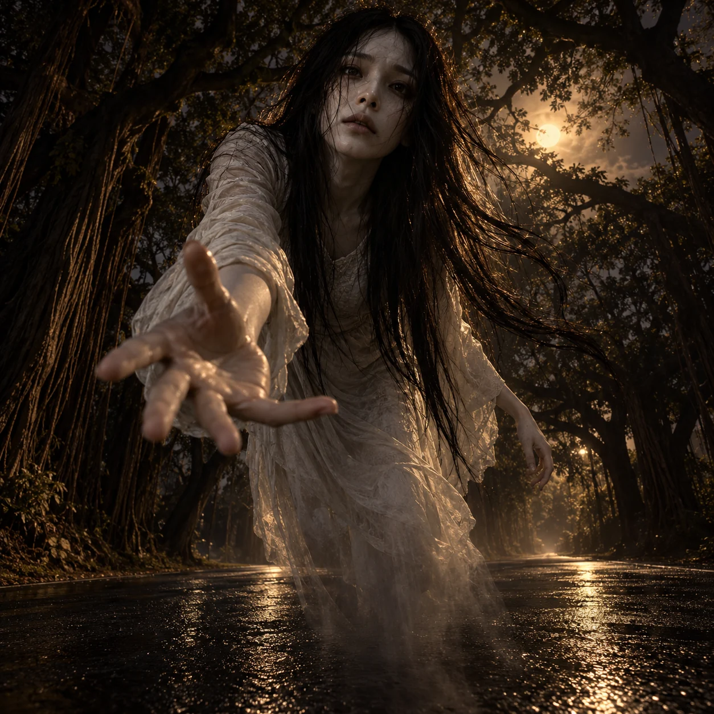
long-haired white-dressed apparition of Balete Drive
Aura: Mysteriously disappear while appearing close to traveler; dress edge dissolves into absence without glow or particles, not a living pedestrian white-lady-c03
Audit ciri dan sumber
- [object Object]
- [object Object]
- [object Object]
Native and 200px inspected. Close reaching apparition dominates, white dress and long hair c01/c14, lower legs visibly fade into empty road c03. Two arms, one head, no invented anatomy or effect, no text. Seven Sangar checks yes; tragic rather than hostile.
Review sumberONE original square premium painterly cinematic Mitoloka illustration of White Lady, long-haired white-dressed apparition of Balete Drive.
ANATOMY: One long-haired female ghost in fully opaque long white dress, one head two arms; lower dress and legs fade into transparent absence showing dark road behind; pallid human face, no horns claws or monstrous teeth [c01, c03, c14]
MOMENT: Glide toward viewer then fade at lower body, one hand reaching out as if requesting help, hair whipping across one cheek, vacant face close and intensely unsettling; feet never touch road.
POWER: Mysteriously disappear while appearing close to traveler; dress edge dissolves into absence without glow or particles, not a living pedestrian [c03]
SCALE & CAMERA: extreme low angle; close foreshortened framing with subject filling most of the square, no invented giant size unless explicitly stated above.
LIGHT & WEATHER: one distant low moon filtered through trees, sharp rim light, deep shadows; dark walnut and antique gold palette with one strong accent.
SURFACE: worn opaque white cloth, damp long hair, wet asphalt.
SETTING: Balete Drive in Quezon City, dark tree-lined road with no road signs writing cars or buildings [c14]
MOOD: uncanny ominous tragic apparition, grieving rather than evil; dangerous or awe-inspiring and imposing, never cute, calm or decorative.
HARD CONSTRAINTS: no text, writing, lettering, inscriptions, pseudoinscriptions, symbols, logo, border, frame or watermark; no extra heads, limbs or fingers; no design borrowed from any film, game, anime or comic; no nudity or explicit gore; no generic glow aura, neon outline or energy ribbons. Entirely original living creature; no statue or toy.
Xingtian
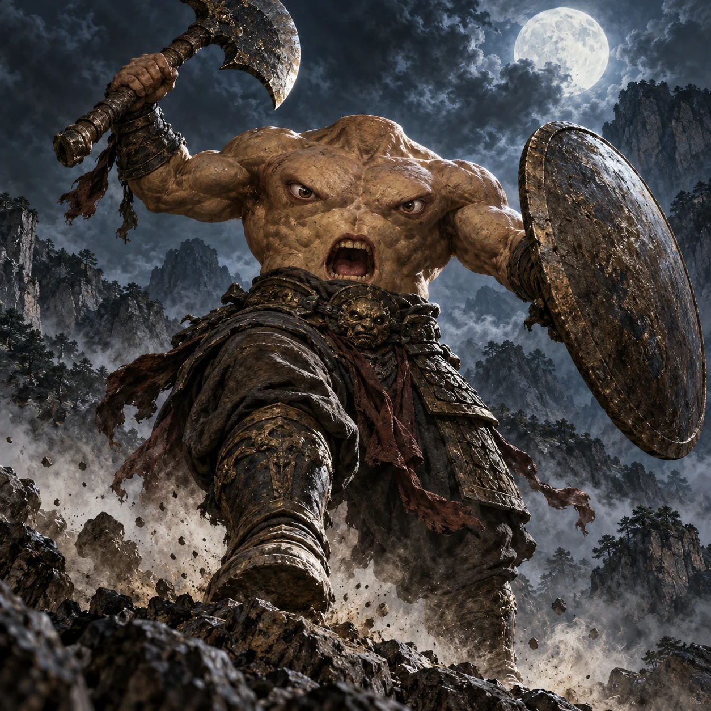
Xingtian, the headless deity dancing defiantly with axe and shield
Aura: Threat or awe through documented anatomy ['xingtian-c01', 'xingtian-c05', 'xingtian-c07'] and action ['xingtian-c05', 'xingtian-c07', 'xingtian-c08']; no generic aura.
Audit ciri dan sumber
- [object Object]
- [object Object]
- [object Object]
Native and 200px inspected: headless torso dominates; exactly two chest eyes and one belly mouth; two arms, two legs, axe and shield visible; fierce dance drives dust physically without magic, giant scale or gore. No text or borrowed design. All seven Uji Sangar answers yes.
Review sumberONE original square premium painterly cinematic Mitoloka illustration of Xingtian, the headless deity dancing defiantly with axe and shield.
ANATOMY: Exactly one headless male divine humanoid, ZERO head, ZERO neck wound or gore, smooth healed shoulder top; exactly TWO eyes placed on chest where nipples would be, and ONE mouth at navel; exactly two arms and two legs; opaque dark waist armor and trousers cover lower body. One axe in right hand, one broad plain shield in left. Chest eyes and belly mouth clearly unobstructed, no exposed nipples or sexual anatomy. [xingtian-c01, xingtian-c05, xingtian-c07]
MOMENT: Perform a fierce defiant war dance toward viewer, raise axe high and drive shield forward, both chest eyes stare at camera and navel mouth opens in shout.
POWER: No visible regeneration or magic; indomitable axe-and-shield dance is documented, physical dust from steps only. [xingtian-c05, xingtian-c07, xingtian-c08]
SCALE & CAMERA: Extreme low angle, headless torso and chest-face fill frame, both feet and weapons clear; divine presence through framing, no giant claim.
LIGHT & WEATHER: one dominant cold moonlight source, sharp rim light, deep warm walnut shadows, natural dust or mist.
SURFACE: tactile coarse weathered surfaces, rich painterly texture, no plastic finish.
SETTING: Rocky terrain at Mount Changyang, storm-dark mountain silhouette. [xingtian-c02, xingtian-c07]
MOOD: menacing or awe-inspiring, dangerous and imposing, never cute, calm or decorative.
HARD CONSTRAINTS: no text, pseudoinscriptions, lettering, logo, border, frame or watermark; no extra heads, limbs or fingers; no design borrowed from film, game, anime or comic; opaque full clothing for humanoids; no nudity or explicit gore; no generic glow aura, neon outline, energy ribbons or magic symbols.
Yamaoroshi
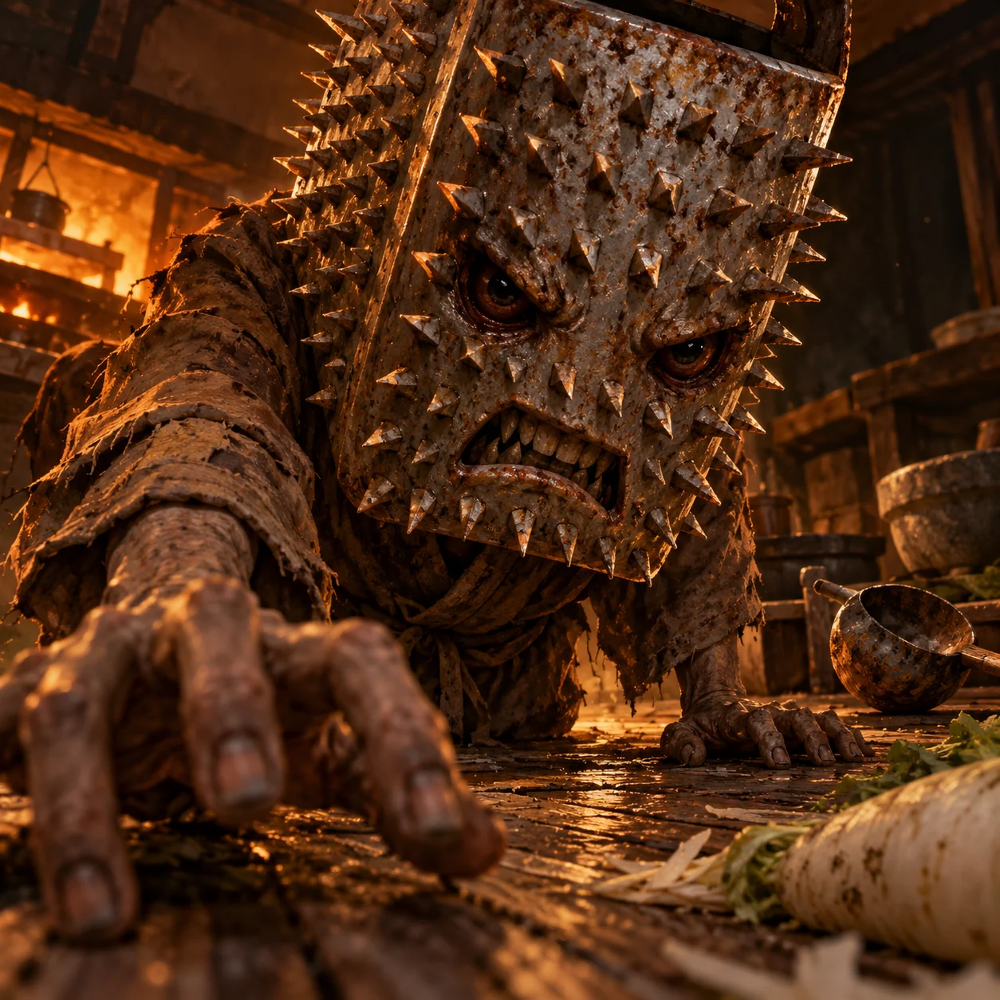
Humanoid living neglected grater, no wind-power interpretation.
Aura: Dull grater spikes c02/c05/c08 confront viewer in close crawl; no invented effects.
Audit ciri dan sumber
- [object Object]
- [object Object]
Native and 200px inspected: grater head with metal teeth/spikes, two eyes, one mouth; humanoid crawling with two arms and opaque robe, fingers perspective-consistent, rear legs occluded. Close intrusive motion readable at 200px. Kitchen tools c09 visible. No wind effects, extra heads/limbs, text or gore. All seven Sangar checks pass.
Review sumberONE original square premium painterly cinematic Mitoloka illustration of Yamaoroshi, the neglected metal grater become a spiny humanoid yokai.
ANATOMY: one humanoid body, one unmistakable elongated METAL GRATER HEAD whose entire front and sides carry many dull bent grating spikes, two dark eyes and one mouth set in that grater head, two humanlike arms with five fingers per hand and two legs; faded opaque brown work robe; NOT an ordinary porcupine, NOT a human wearing a mask [c02,c05,c08]
MOMENT: Crawl forward over abandoned kitchen floor toward the viewer, thrust its enormous-in-perspective rusty grater face close to the lens, bracing one hand on the boards while the other reaches forward; grimace, not smiling
POWER: no documented traditional power; physical menace through metal grater anatomy and intrusive crawl only. No wind magic, no supernatural particles
SCALE & CAMERA: extreme low angle; normal utensil/yokai scale kept ambiguous, extreme close framing, grater face fills upper two thirds and spikes silhouette clearly at thumbnail size; no human scale comparison
LIGHT & WEATHER: one dominant old hearth fire offscreen, amber rim light, deep walnut shadows and ordinary floating kitchen dust
SURFACE: dull rusty grater teeth, oxidized metal, weathered fabric, splintered wood
SETTING: the kitchen tools of its documented illustration: daikon radish, shell ladle, mortar tucked into dark floor edges [c09]
MOOD: dangerous, imposing or awe-inspiring, never cute, calm or decorative.
HARD CONSTRAINTS: no text, pseudoinscriptions, lettering, logo, border, frame or watermark; no extra heads, limbs or fingers; no borrowed film, game, anime or comic design; no nudity or explicit gore; no generic glowing aura, neon outline, energy ribbons, floating runes. Strong painterly brushwork, not plastic 3D.
Yuqiang
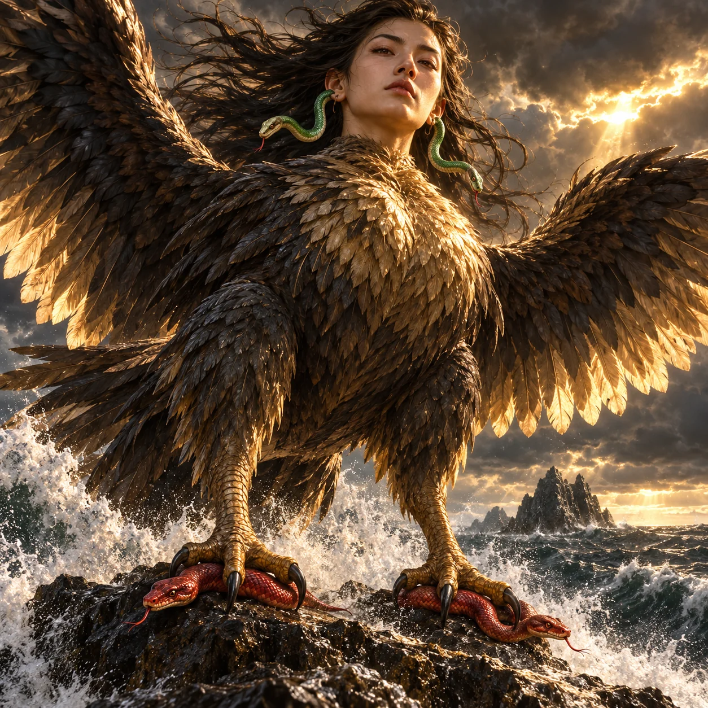
human-faced bird-bodied Yuqiang with green ear snakes and red foot snakes
Aura: Command North Sea wind: feathers stream in gale and sea foam blows sideways below, documented wind domain, no neon or magic rings yuqiang-c01,yuqiang-c02
Audit ciri dan sumber
- [object Object]
- [object Object]
- [object Object]
Native and 200px inspected: human face bird body, two wings two legs, exactly two single-headed green ear snakes and two red foot snakes c03/c05. Wind streams hair, feathers and sea spray c01/c02. Dominant awe-inspiring close descent, no invented scale, aura or text; all seven Sangar checks yes.
Review sumberONE original square premium painterly cinematic Mitoloka illustration of Yuqiang, human-faced bird-bodied Yuqiang with green ear snakes and red foot snakes.
ANATOMY: Exactly one deity with HUMAN FACE and BIRD BODY, one head two eyes, two feathered wings, two bird legs; exactly TWO GREEN SNAKES as ear ornaments, one at each ear, and exactly TWO RED SNAKES beneath the feet, four snakes total. All four snakes visibly separate and countable. Each snake has EXACTLY ONE HEAD and ONE SHARPLY TAPERED HEADLESS TAIL, four snake heads total. Green snakes each hang as a simple open curve from an ear, never a loop: head on outer dangling end, slender pointed tail at ear. Fully feather-covered body, no human torso or rider [c03, c05]
MOMENT: Descend toward viewer with human face and huge bird chest dominating center, wings spread, two green ear snakes arc separately beside face, two red snakes lie under two feet at bottom with heads clear. Keep snakes short enough to fit all four, no extra serpent coils.
POWER: Command North Sea wind: feathers stream in gale and sea foam blows sideways below, documented wind domain, no neon or magic rings [c01, c02]
SCALE & CAMERA: extreme low angle; close foreshortened framing with subject filling most of the square, no invented giant size unless explicitly stated above.
LIGHT & WEATHER: one low amber slit through windblown storm cloud, sharp rim light, deep shadows; dark walnut and antique gold palette with one strong accent.
SURFACE: rain-wet dark feathers, human skin, glossy green and red snake scales.
SETTING: Small rocky islet in North Sea, dark rough water below [c05]
MOOD: reverent awe-inspiring sea and wind deity; dangerous or awe-inspiring and imposing, never cute, calm or decorative.
HARD CONSTRAINTS: no text, writing, lettering, inscriptions, pseudoinscriptions, symbols, logo, border, frame or watermark; no extra heads, limbs or fingers; no design borrowed from any film, game, anime or comic; no nudity or explicit gore; no generic glow aura, neon outline or energy ribbons. Entirely original living creature; no statue or toy.
Zaō Gongen
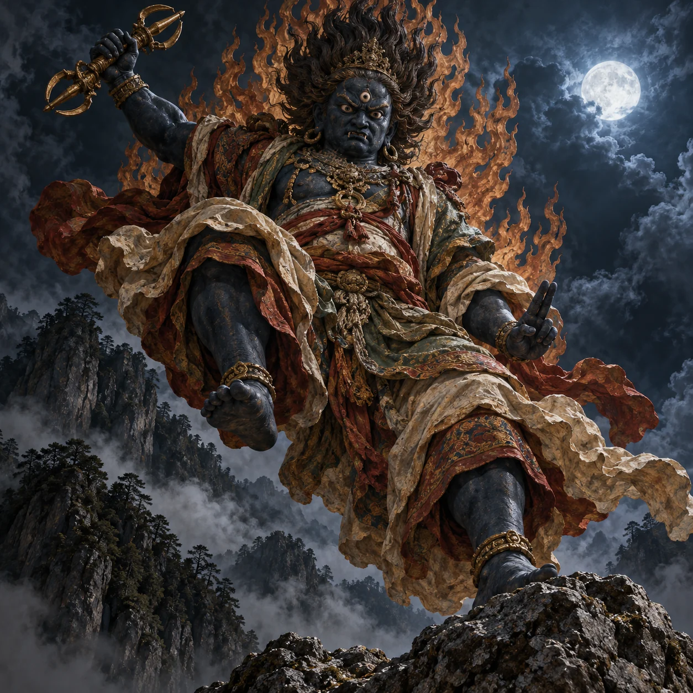
Zaō Gongen, the sacred wrathful demon-subduing Shugendō bodhisattva
Aura: Threat or awe through documented anatomy ['zao-gongen-c06', 'zao-gongen-c13'] and action ['zao-gongen-c05', 'zao-gongen-c14']; no generic aura.
Audit ciri dan sumber
- [object Object]
- [object Object]
- [object Object]
Native and 200px inspected: one blue-black face with three open eyes, two arms and two legs; own right hand raises three-pronged vajra, own left forms two-finger sword mudra; own left foot treads boulder and own right foot raised. Wisdom flames from c14. Sacred fierce leap dominates frame, no text, gore or generic aura. All seven Uji Sangar answers yes.
Review sumberONE original square premium painterly cinematic Mitoloka illustration of Zaō Gongen, the sacred wrathful demon-subduing Shugendō bodhisattva.
ANATOMY: Exactly ONE face with exactly THREE clearly open eyes (two natural eyes and one large central forehead eye), blue-black body, bristling hair, exactly TWO arms and TWO legs. Fully opaque layered sacred robes cover torso and lower body. OWN RIGHT hand (viewer LEFT) holds a THREE-PRONGED VAJRA high overhead. OWN LEFT hand (viewer RIGHT) forms sword mudra with two extended fingers at waist. OWN LEFT foot (viewer RIGHT) alone treads a boulder; OWN RIGHT leg (viewer LEFT) leaps upward. [zao-gongen-c06, zao-gongen-c13]
MOMENT: Leap forward over the boulder toward viewer in the exact single-foot wrathful iconographic posture, fierce compassionate sacred gaze confronts camera.
POWER: Wisdom flames rise behind the deity as documented; vajra and stepping stance represent subduing demons; no invented lightning, neon aura or energy ribbons. [zao-gongen-c05, zao-gongen-c14]
SCALE & CAMERA: Extreme low angle, full body fills frame, all3eyes and both2hands/2feet visible with vajra and mudra; no small distant subject.
LIGHT & WEATHER: one dominant cold moonlight source, sharp rim light, deep warm walnut shadows, natural dust or mist.
SURFACE: tactile coarse weathered surfaces, rich painterly texture, no plastic finish.
SETTING: Summit rocks of Mount Kinpu, Japan, deep mountain shadow. [zao-gongen-c05, zao-gongen-c13]
MOOD: menacing or awe-inspiring, dangerous and imposing, never cute, calm or decorative.
HARD CONSTRAINTS: no text, pseudoinscriptions, lettering, logo, border, frame or watermark; no extra heads, limbs or fingers; no design borrowed from film, game, anime or comic; opaque full clothing for humanoids; no nudity or explicit gore; no generic glow aura, neon outline, energy ribbons or magic symbols.
Adaro
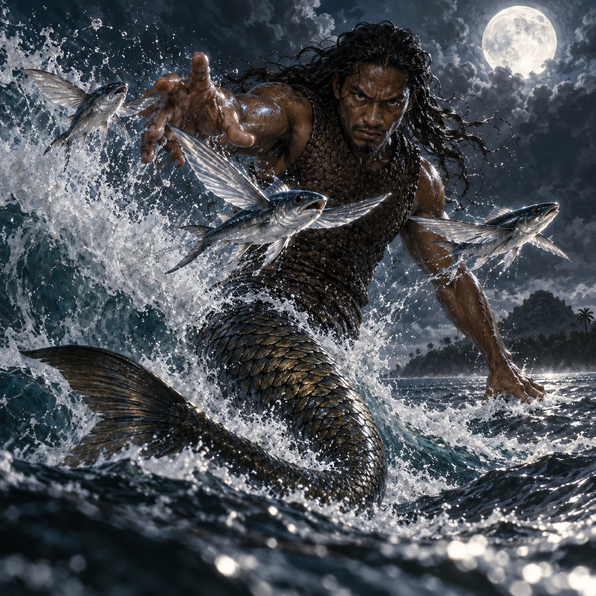
Adaro ni matawa sea spirit, partly human and fish, attacking with flying fish.
Aura: Physical flying-fish attack c10 and half-fish body c09 provide menace; no glow.
Audit ciri dan sumber
- [object Object]
- [object Object]
- [object Object]
Native and 200px inspected: one human head, two arms/five-finger hands, one scaled fish lower body and tail, no human legs, opaque vest. Three flying fish physically launch forward c10; no ghost-shark variant or invented gills/horns. Confrontational mid-attack action readable at 200px, no text or gore. All seven Sangar checks pass.
Review sumberONE original square premium painterly cinematic Mitoloka illustration of Adaro, a malevolent partly human partly fish sea spirit of Makira, specifically the adaro ni matawa variant.
ANATOMY: one adult male half-human half-fish sea spirit, ONE head, two natural eyes, two arms and hands with five fingers each; lower body one powerful scaled fish tail with a single forked tail fin, no human legs; human torso entirely covered by opaque dark woven vest; no horns, shark head, wings, face gills or extra fins invented [c09]
MOMENT: Surge half out of a breaking sea wave toward viewer and cast three real flying fish forward like darts with one arm, other hand braces water; eyes confront viewer
POWER: adaro ni matawa attacks men with flying fish [c10]; three silver flying fish with their real winglike pectoral fins streak physically through air from its throwing gesture, no beams, no magic glow, no guns
SCALE & CAMERA: extreme low angle; tight water-level low-angle foreground, spirit head and arms dominate with fish tail visibly curling along lower edge; normal human torso scale, no tiny ship comparison
LIGHT & WEATHER: one dominant moon, hard silver rim light, deep walnut shadows, violent natural sea spray
SURFACE: salt-wet dark human skin, coarse woven vest, tactile bronze-black fish scales, living silver flying fish
SETTING: far out at sea near a small Makira coastal island, dark island silhouette far behind [c09]
MOOD: dangerous, imposing or awe-inspiring, never cute, calm or decorative.
HARD CONSTRAINTS: no text, pseudoinscriptions, lettering, logo, border, frame or watermark; no extra heads, limbs or fingers; no borrowed film, game, anime or comic design; no nudity or explicit gore; no generic glowing aura, neon outline, energy ribbons, floating runes. Strong painterly brushwork, not plastic 3D.
Adjassou-Linguetor
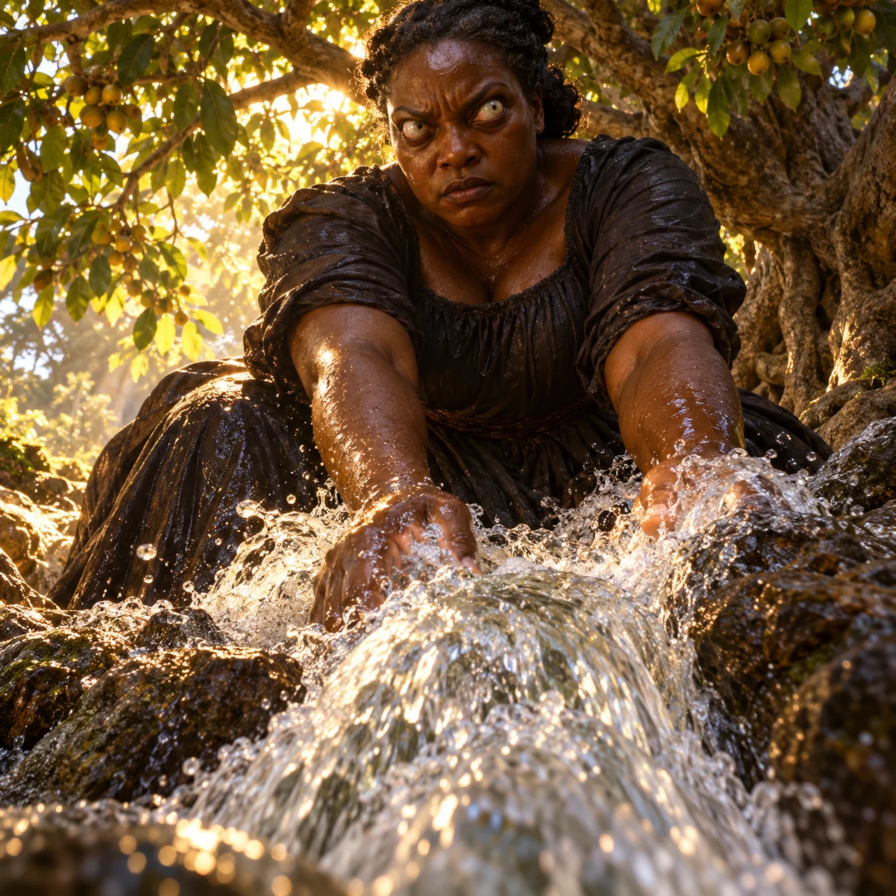
protruding-eyed spring-water loa under mombin tree
Aura: Fresh spring water surges out of rock and pours forward around her hands as she governs spring water; no colored aura or extra elemental powers adjassou-linguetor-c02
Audit ciri dan sumber
- [object Object]
- [object Object]
- [object Object]
Native and 200px inspected: protruding eyes and stern face c01/c04 immediately visible, two arms force spring water toward foreground c02. Mombin canopy and spring c04, unadorned opaque dress. Reverent powerful close action rather than neutral portrait, no new anatomy or magic, no text; all seven Sangar checks yes.
Review sumberONE original square premium painterly cinematic Mitoloka illustration of Adjassou-Linguetor, protruding-eyed spring-water loa under mombin tree.
ANATOMY: One female water loa with prominently PROTRUDING EYES, one head two eyes two arms; fully opaque plain dark unadorned everyday dress, no special robe crown weapon or symbols [c01, c04]
MOMENT: Lean forward from under mombin branches, both hands driving a clear rush of spring water toward foreground, protruding eyes very clear and severe, fully clothed female figure fills frame.
POWER: Fresh spring water surges out of rock and pours forward around her hands as she governs spring water; no colored aura or extra elemental powers [c02]
SCALE & CAMERA: extreme low angle; close foreshortened framing with subject filling most of the square, no invented giant size unless explicitly stated above.
LIGHT & WEATHER: one low golden shaft through mombin canopy, sharp rim light, deep shadows; dark walnut and antique gold palette with one strong accent.
SURFACE: natural skin, wet dark cotton dress, clear spring water, rough roots and rock.
SETTING: Under mombin tree beside a freshwater spring [c04]
MOOD: reverent awe-inspiring stern and bad-tempered water loa, never caricatured or demonic; dangerous or awe-inspiring and imposing, never cute, calm or decorative.
HARD CONSTRAINTS: no text, writing, lettering, inscriptions, pseudoinscriptions, symbols, logo, border, frame or watermark; no extra heads, limbs or fingers; no design borrowed from any film, game, anime or comic; no nudity or explicit gore; no generic glow aura, neon outline or energy ribbons. Entirely original living creature; no statue or toy.
Adlivun
Menunggu gambar yang lolos audit
Adrasteia
Menunggu gambar yang lolos audit
Afruvvá
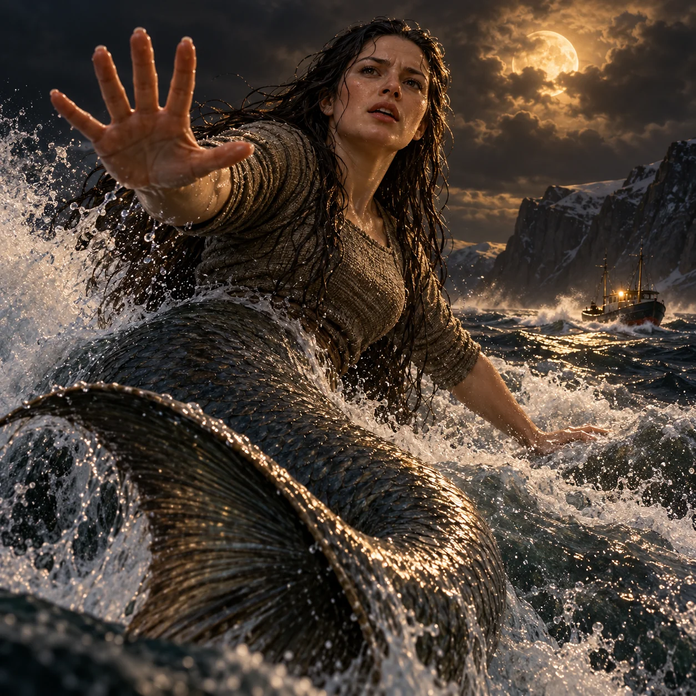
guardian long-haired fish-tailed Afruvva warning sailors
Aura: Warn seafarers to return to shore: raise open hand in urgent warning while tail cuts physically through sea water, no storm-control power afruvva-c03,afruvva-c06
Audit ciri dan sumber
- [object Object]
- [object Object]
- [object Object]
Native and 200px inspected. Single large fish tail, long-haired woman c02/c05, two arms one head, opaque garment. Urgent warning hand c03/c06 toward traveler; sea splash is bodily motion not weather control. Dominant foreshortened mermaid remains awe-inspiring guardian at200. No text or extra anatomy; all seven Sangar checks yes.
Review sumberONE original square premium painterly cinematic Mitoloka illustration of Afruvvá, guardian long-haired fish-tailed Afruvva warning sailors.
ANATOMY: One beautiful long-haired mermaid, one human female head two eyes two arms and one long FISH TAIL instead of legs; fully opaque plain woven upper garment covering chest torso and shoulders, no crown weapon or ornaments [c02, c05]
MOMENT: Rise close out of a breaking sea swell toward viewer, one open hand thrust in warning and other braced against water, long curved fish tail lifted across lower foreground to make mermaid identity unmistakable.
POWER: Warn seafarers to return to shore: raise open hand in urgent warning while tail cuts physically through sea water, no storm-control power [c03, c06]
SCALE & CAMERA: extreme low angle; close foreshortened framing with subject filling most of the square, no invented giant size unless explicitly stated above.
LIGHT & WEATHER: one low warm moon through northern cloud, sharp rim light, deep shadows; dark walnut and antique gold palette with one strong accent.
SURFACE: wet long hair, rough opaque woven garment, dark wet fish scales, white sea spray.
SETTING: Finnmark coastal sea, dark northern cliffs and small distant fishing boat facing shore [c01, c03]
MOOD: awe-inspiring benevolent guardian, urgent and commanding rather than evil; dangerous or awe-inspiring and imposing, never cute, calm or decorative.
HARD CONSTRAINTS: no text, writing, lettering, inscriptions, pseudoinscriptions, symbols, logo, border, frame or watermark; no extra heads, limbs or fingers; no design borrowed from any film, game, anime or comic; no nudity or explicit gore; no generic glow aura, neon outline or energy ribbons. Entirely original living creature; no statue or toy.
Aganippe
Menunggu gambar yang lolos audit
Agunua
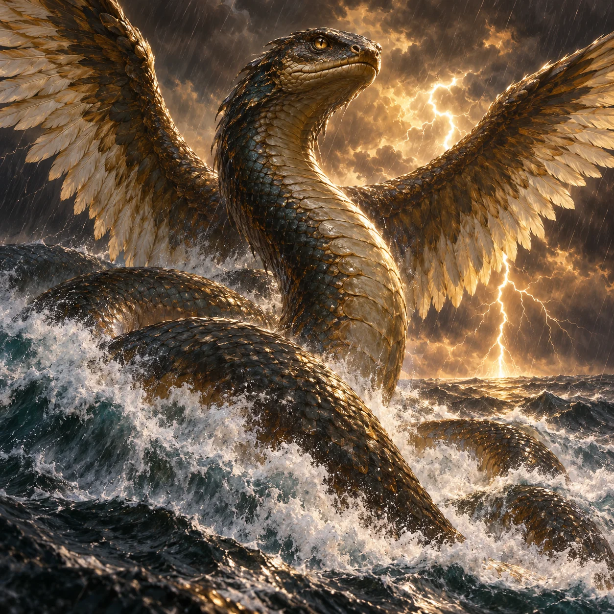
Male cosmic winged serpent Agunua, sea-and-storm scene.
Aura: Cosmic serpent c01/c06/c08 rises over sea c03 under its created storms c07.
Audit ciri dan sumber
- [object Object]
- [object Object]
- [object Object]
Native and 200px inspected: one snake head, one continuous limbless coiled serpent body and two wings, no added arms/legs/horns; respectful majestic upward uncoiling through storm sea. c01/c06/c08 anatomy, c03 sea and c07 natural lightning/rain/storms, no generic glow. Both wings and serpent head read at thumbnail. All seven Sangar checks pass.
Review sumberONE original square premium painterly cinematic Mitoloka illustration of Agunua, the male cosmic winged serpent and sea deity of Makira, respectfully awe-inspiring.
ANATOMY: ONE immense living male serpent, one snake head, two eyes, one long limbless coiling snake body and tail, TWO large feathered wings as restrained bilateral rendering of documented winged serpent; no human arms, legs, extra heads, horns or four-eyed design [c01,c06,c08]
MOMENT: Rise from the storm sea toward the low viewer, uncoil the vast serpent body and open both wings while a storm breaks behind its head; solemn focused snake face, mouth closed, never a vicious demon
POWER: sea deity c03 and creator of thunder, lightning, rain and storms c07: a single natural lightning fork strikes the distant sea behind it, wind pushes rain and real ocean waves rise and break against its coiling body. No magic beams or rays emitted from body
SCALE & CAMERA: extreme low angle; cosmic serpent fills square frame, head upper central foreground, long snake coils and both wings clearly visible; no human worshippers needed
LIGHT & WEATHER: one dominant lightning flash behind the serpent, warm gold-edged storm light, deep brown shadows, slanting rain and heavy sea spray
SURFACE: wet dark bronze snake scales, weathered ivory-gold flight feathers, white wave foam
SETTING: sea off Makira, storm horizon [c03,c07,c11]
MOOD: dangerous, imposing or awe-inspiring, never cute, calm or decorative.
HARD CONSTRAINTS: no text, pseudoinscriptions, lettering, logo, border, frame or watermark; no extra heads, limbs or fingers; no borrowed film, game, anime or comic design; no nudity or explicit gore; no generic glowing aura, neon outline, energy ribbons, floating runes. Strong painterly brushwork, not plastic 3D.
Akubōzu
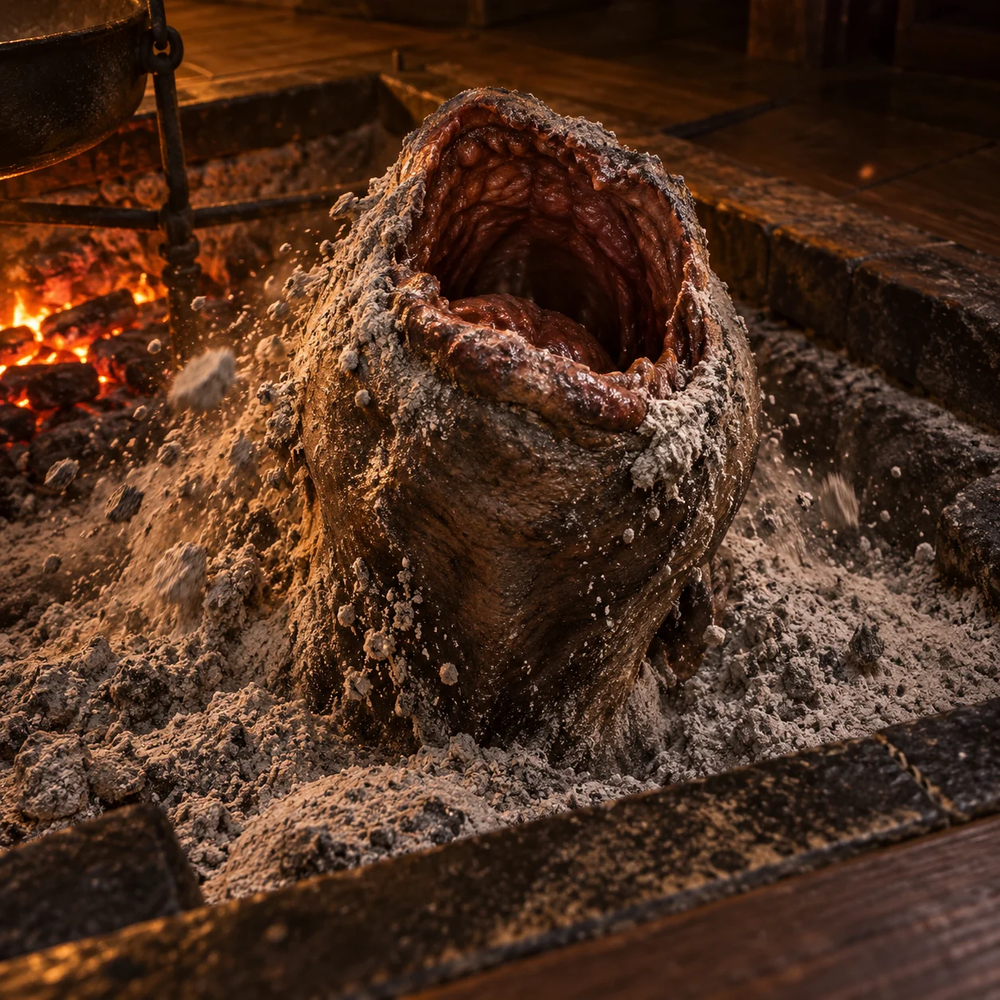
top-of-head-mouthed Agu-banba/Hai-baba related regional ash-yokai variant
Aura: Emerge violently when hearth ash is disturbed; ash scatters and falls physically from head, top-of-head mouth gapes, no fire breath or magical aura akubozu-c03,akubozu-c06,akubozu-c10,akubozu-c11
Audit ciri dan sumber
- [object Object]
- [object Object]
- [object Object]
Native and 200px inspected. Ash-covered head rises with mouth visibly at crown c10/c11; unspecified face and limbs concealed. Ash scatter and irori hearth c02/c03/c06. Close emergence threatens viewer, no victim or explicit gore, no new eyes or limbs. No text. All seven Sangar checks yes for chosen related regional variant.
Review sumberONE original square premium painterly cinematic Mitoloka illustration of Akubōzu, top-of-head-mouthed Agu-banba/Hai-baba related regional ash-yokai variant.
ANATOMY: One ash-lurking creature with a single head and a large mouth ON TOP OF ITS HEAD facing upward; head emerges from ash, other facial details and body concealed beneath hearth ash, no invented limbs horns or eyes [c10, c11]
MOMENT: Thrust the ash-coated head from hearth toward viewer, camera above rim of hearth looking slightly down enough to see huge mouth on top of head wide open, side of head visible below mouth so location unmistakable; no victim.
POWER: Emerge violently when hearth ash is disturbed; ash scatters and falls physically from head, top-of-head mouth gapes, no fire breath or magical aura [c03, c06, c10, c11]
SCALE & CAMERA: near hearth level with a slight downward tilt just enough to reveal TOP of head mouth; close foreshortened framing with subject filling most of the square, no invented giant size unless explicitly stated above.
LIGHT & WEATHER: one low amber ember source off to side, sharp rim light, deep shadows; dark walnut and antique gold palette with one strong accent.
SURFACE: dry powdery gray ash, rough ash-coated organic skin, dark worn hearth stones.
SETTING: Ash bed of a dark irori hearth, rough wood floor edges visible [c02, c06, c10]
MOOD: menacing ash-dwelling monster; dangerous or awe-inspiring and imposing, never cute, calm or decorative.
HARD CONSTRAINTS: no text, writing, lettering, inscriptions, pseudoinscriptions, symbols, logo, border, frame or watermark; no extra heads, limbs or fingers; no design borrowed from any film, game, anime or comic; no nudity or explicit gore; no generic glow aura, neon outline or energy ribbons. Entirely original living creature; no statue or toy.
Akuro-ō
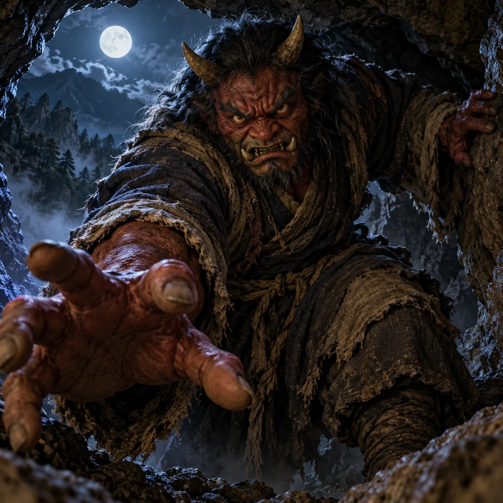
Akuro-ō, selecting the oni version of the medieval otogizōshi tales
Aura: Threat or awe through documented anatomy ['akuro-o-c01', 'akuro-o-c03'] and action []; no generic aura.
Audit ciri dan sumber
- [object Object]
- [object Object]
Native and 200px inspected: one forceful oni emerges from Tatsukoku cave, two horns and two eyes, two arms with reaching hand and gripping hand, clothed two-legged crouch; no invented magic, giant scale or weapons. Close confrontation remains dangerous at thumbnail. No text, gore or borrowed design. All seven Uji Sangar answers yes.
Review sumberONE original square premium painterly cinematic Mitoloka illustration of Akuro-ō, selecting the oni version of the medieval otogizōshi tales.
ANATOMY: Exactly one fierce oni-shaped male figure with one head, two eyes, two short natural horns, two arms and two legs; fully covered in plain opaque rough warrior robes, no invented elaborate armor, weapons or extra heads. [akuro-o-c01, akuro-o-c03]
MOMENT: Emerge aggressively from a shadowed cave toward viewer, crouch low and reach one hand toward camera while other hand grips the cave rim; snarl without gore.
POWER: No documented magical power; imposing oni anatomy and physical advance only. []
SCALE & CAMERA: Extreme low angle close confrontation, oni fills frame without claiming giant scale.
LIGHT & WEATHER: one dominant cold moonlight source, sharp rim light, deep warm walnut shadows, natural dust or mist.
SURFACE: tactile coarse weathered surfaces, rich painterly texture, no plastic finish.
SETTING: Tatsukoku cave in mountainous Mutsu, Japan at night. [akuro-o-c06, akuro-o-c08]
MOOD: menacing or awe-inspiring, dangerous and imposing, never cute, calm or decorative.
HARD CONSTRAINTS: no text, pseudoinscriptions, lettering, logo, border, frame or watermark; no extra heads, limbs or fingers; no design borrowed from film, game, anime or comic; opaque full clothing for humanoids; no nudity or explicit gore; no generic glow aura, neon outline, energy ribbons or magic symbols.
Akurojin-no-hi
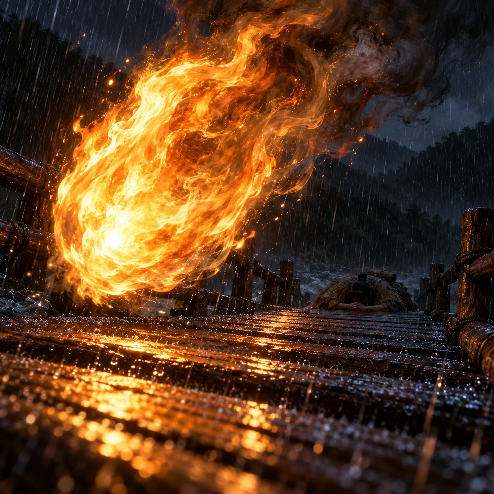
Active disembodied ghostly flame crossing a rain-soaked log bridge.
Aura: Moving ghostly fire c05 confronts viewer; prone traveller follows c06, no invented sickness effect.
Audit ciri dan sumber
- [object Object]
- [object Object]
- [object Object]
Native and 200px inspected: single passing disembodied flame dominates near camera, no face or limbs, close perspective rather than giant firestorm; prone fully clothed traveller c06 waits behind on rain-soaked log-built bridge c03/c09. Physically lit wet wood and river only; no sickness rays or bridge fire. Dangerous active force c01/c05 remains unmistakable at 200px. All seven Sangar checks pass.
Review sumberONE original square premium painterly cinematic Mitoloka illustration of Akurojin-no-hi, the moving ghostly fire of rainy nights at an Ise river crossing.
ANATOMY: a SINGLE disembodied natural-looking ghostly FLAME, no face, eyes, limbs, human figure, lantern casing, horns or invented animal body; intensely textured amber flame and dark smoke, compact flame shaped like a carried lantern light, never a giant fire monster [c01,c05]
MOMENT: Pass directly in front of the very low camera along the log river crossing, turbulent flame leaning sideways mid-flight and briefly filling foreground as it moves back and forth; an adult traveller lies face-down safely on distant bridge planks waiting for the fire to pass [c05,c06]
POWER: documented moving ghostly fire [c01,c05], natural firelight on wet wood and river ripples only. Serious illness c07 is NOT visualized; no infection rays or burning bridge, no firestorm
SCALE & CAMERA: extreme low angle; extreme close-up of passing flame, occupies at least two thirds of square frame; log bridge perspective recedes behind; flame compact lanternlike size, no giant scale
LIGHT & WEATHER: the ghostly flame itself is the ONE dominant amber light, rim lighting raindrops, black rainy night; realistic smoke and falling rain
SURFACE: layered turbulent translucent fire, rain beads, soaked rough timber, moving deep river water
SETTING: rainy night at deep river with a simple log bridge in Ise, Japan [c03,c04,c09]
MOOD: dangerous, imposing or awe-inspiring, never cute, calm or decorative.
HARD CONSTRAINTS: no text, pseudoinscriptions, lettering, logo, border, frame or watermark; no extra heads, limbs or fingers; no borrowed film, game, anime or comic design; no nudity or explicit gore; no generic glowing aura, neon outline, energy ribbons, floating runes. Strong painterly brushwork, not plastic 3D.
Alux
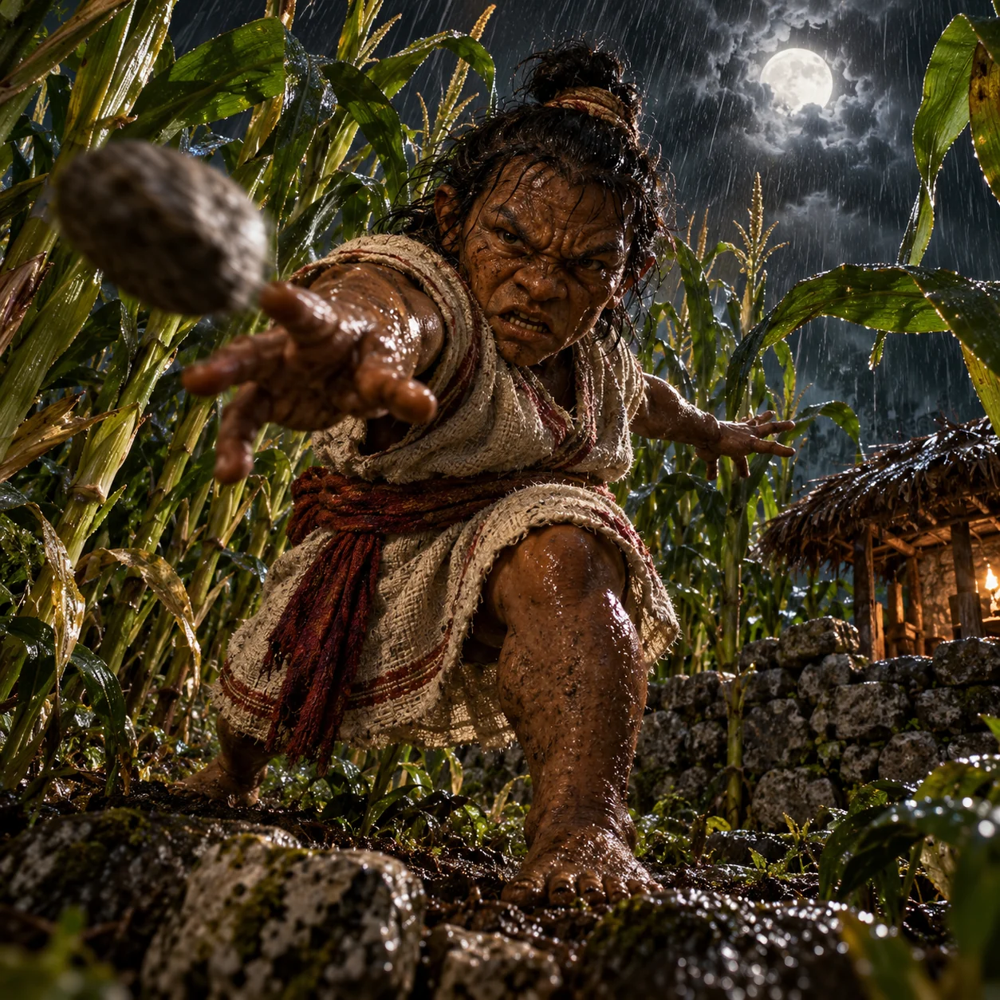
physical miniature Maya field guardian throwing stones
Aura: Hiss and THROW a stone at a crop thief, one stone just released toward viewer; rain falls over the maize from documented rain-summoning role, no energy trails alux-c06,alux-c13
Audit ciri dan sumber
- [object Object]
- [object Object]
- [object Object]
Native and 200px inspected. Knee-high miniature human guardian in opaque woven dress c02, two arms two legs, hissing face and thrown stone c13. Towering maize and small shelter keep miniature scale, rain c06. No horns pointed ears new anatomy or magic. Fierce protective action at200, no text; all seven Sangar checks yes.
Review sumberONE original square premium painterly cinematic Mitoloka illustration of Alux, physical miniature Maya field guardian throwing stones.
ANATOMY: One knee-high miniature Maya person, one head two eyes two arms two legs, fully opaque plain woven traditional tunic and wrap without letters or glyphs; no pointed ears horns or invented weapons [c01, c02]
MOMENT: Whip one arm forward throwing a stone toward viewer, mouth hissing, other arm spread for balance, maize stalks tall above him establish knee-high scale. Face severe, no cute child proportions.
POWER: Hiss and THROW a stone at a crop thief, one stone just released toward viewer; rain falls over the maize from documented rain-summoning role, no energy trails [c06, c13]
SCALE & CAMERA: extreme low angle; close foreshortened framing with subject filling most of the square, no invented giant size unless explicitly stated above.
LIGHT & WEATHER: one low moon through raincloud, sharp rim light, deep shadows; dark walnut and antique gold palette with one strong accent.
SURFACE: weathered humanlike skin, coarse opaque cotton, wet maize leaves and rough limestone.
SETTING: Yucatan maize field at night beside low stone fence and very small plain shelter [c04, c05, c06, c13]
MOOD: awe-inspiring fierce protective field spirit, not evil; dangerous or awe-inspiring and imposing, never cute, calm or decorative.
HARD CONSTRAINTS: no text, writing, lettering, inscriptions, pseudoinscriptions, symbols, logo, border, frame or watermark; no extra heads, limbs or fingers; no design borrowed from any film, game, anime or comic; no nudity or explicit gore; no generic glow aura, neon outline or energy ribbons. Entirely original living creature; no statue or toy.
Amatsu-Mikaboshi
Menunggu gambar yang lolos audit
Amatsumara
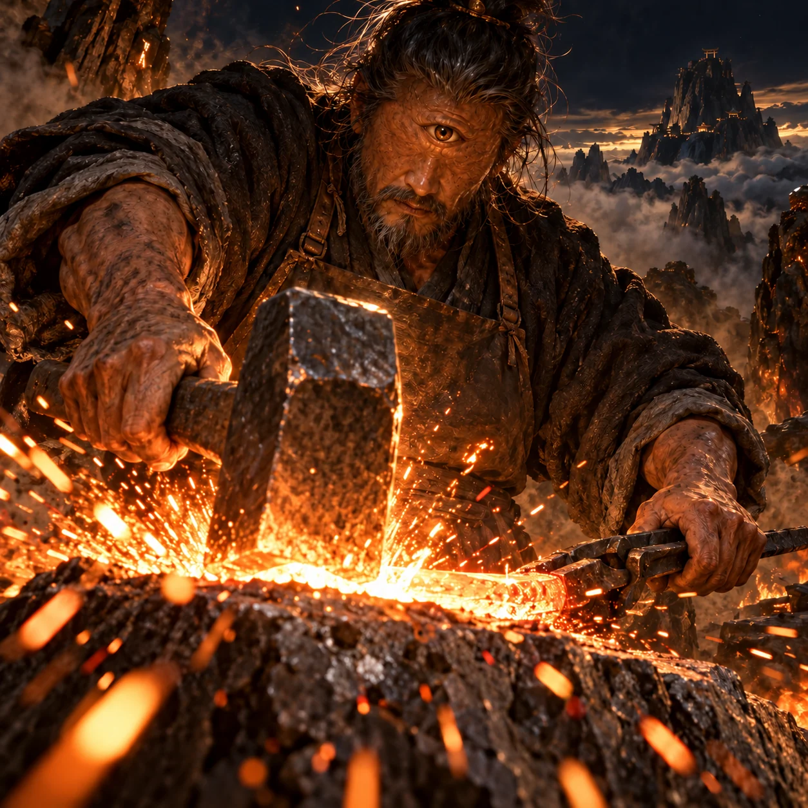
Amatsumara identified with the one-eyed heavenly smith Amenomahitotsu, refining mirror iron at the heavenly rock forge.
Aura: Awe through the single-eyed heavenly kami identity (c07/c10), force of the documented ironworking (c06) and very close low camera; sparks are physical forge effects.
Audit ciri dan sumber
- [object Object]
- [object Object]
- [object Object]
PNG native1254 dilihat: tepat satu mata di tengah tanpa soket lateral,dua lengan/tangan,baju buram,hammer/anvil moment dengan sparks fisik; megah sebagai kami celestial-smith. Thumbnail menyusul pemeriksaan root registry.
Review sumberEdit ONLY the face anatomy of Amatsumara in this illustration. The kami must have EXACTLY ONE EYE TOTAL: preserve the existing single central eye on the forehead. Completely REMOVE BOTH lateral eyes AND BOTH lateral eye sockets AND BOTH lateral eyebrows from the normal human eye positions; replace them with continuous smooth weathered forehead/upper-cheek skin, with no slits, hollows, scars or lids. There must be only the central eye above his nose; no second or third eye anywhere. Keep all other features and the whole composition exactly unchanged: opaque robes, leather apron, two arms and hands, hammer striking hot iron on rock, forging sparks, divine rocky heavenly setting, painterly cinematic lighting. No text, signatures, watermarks, borders, extra limbs or generic magic aura.